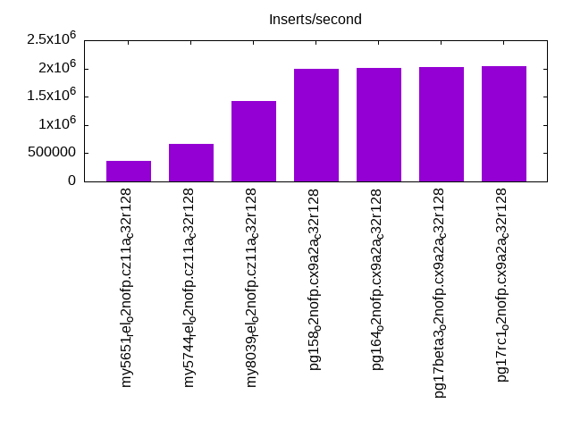
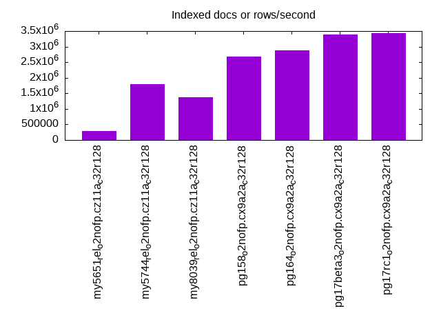
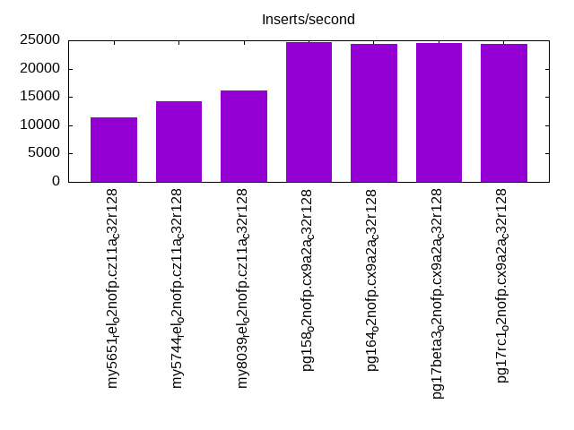
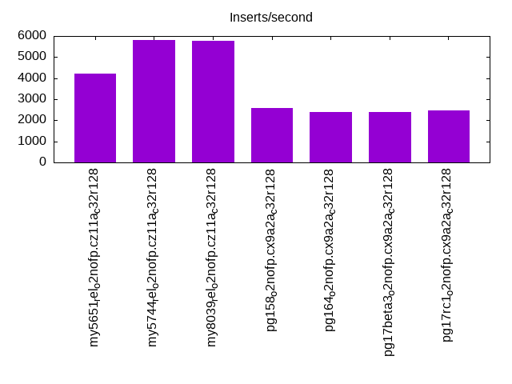
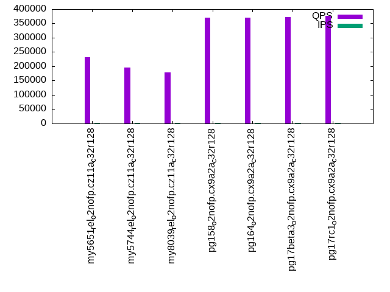
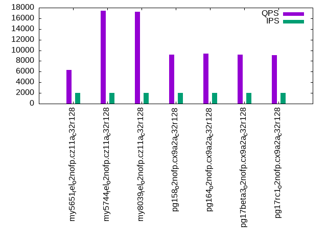
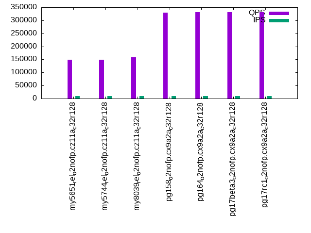
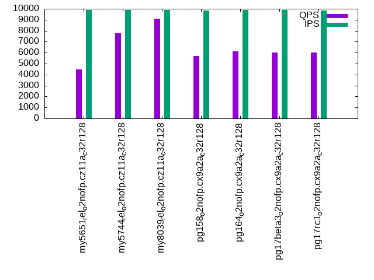
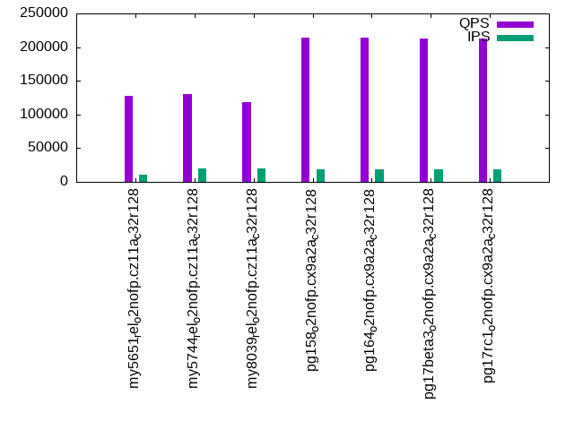
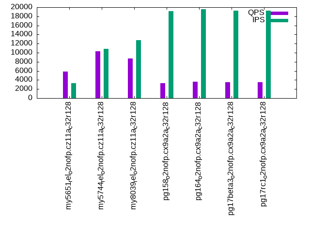

This is a report for the insert benchmark with 4000M docs and 20 client(s). It is generated by scripts (bash, awk, sed) and Tufte might not be impressed. An overview of the insert benchmark is here and a short update is here. Below, by DBMS, I mean DBMS+version.config. An example is my8020.c10b40 where my means MySQL, 8020 is version 8.0.20 and c10b40 is the name for the configuration file.
The test server is an ax162-s from Hetzner (see here) with 48 cores, AMD SMT disabled, 128G RAM and ext4 using 2 NVMe devices with SW RAID 1. The benchmark was run with 20 clients and there were 1 or 3 connections per client (1 for queries or inserts without rate limits, 1+1 for rate limited inserts+deletes). It uses 8 tables with a table per client. It loads 200M rows per table without secondary indexes, creates 3 secondary indexes per table, then inserts 4m+1m rows per table with a delete per insert to avoid growing the table. It then does 6 read+write tests for 1800s each that do queries as fast as possible with 100,100,500,500,1000,1000 inserts/s and the same for deletes/s per client concurrent with the queries. The database is larger than memory. Clients and the DBMS share one server.
The tested DBMS are:
The numbers are inserts/s for l.i0, l.i1 and l.i2, indexed docs (or rows) /s for l.x and queries/s for qr100, qp100 thru qr1000, qp1000" The values are the average rate over the entire test for inserts (IPS) and queries (QPS). The range of values for IPS and QPS is split into 3 parts: bottom 25%, middle 50%, top 25%. Values in the bottom 25% have a red background, values in the top 25% have a green background and values in the middle have no color. A gray background is used for values that can be ignored because the DBMS did not sustain the target insert rate. Red backgrounds are not used when the minimum value is within 80% of the max value.
| dbms | l.i0 | l.x | l.i1 | l.i2 | qr100 | qp100 | qr500 | qp500 | qr1000 | qp1000 |
|---|---|---|---|---|---|---|---|---|---|---|
| my5651_rel_o2nofp.cz11a_c32r128 | 371264 | 298352 | 11325 | 4215 | 232061 | 6318 | 148810 | 4456 | 128256 | 5839 |
| my5744_rel_o2nofp.cz11a_c32r128 | 672043 | 1793722 | 14164 | 5800 | 194689 | 17422 | 149680 | 7750 | 130415 | 10282 |
| my8039_rel_o2nofp.cz11a_c32r128 | 1429082 | 1367521 | 16129 | 5790 | 179440 | 17190 | 158454 | 9095 | 118613 | 8682 |
| pg158_o2nofp.cx9a2a_c32r128 | 1989060 | 2673797 | 24661 | 2599 | 370777 | 9161 | 329629 | 5712 | 213552 | 3273 |
| pg164_o2nofp.cx9a2a_c32r128 | 2004008 | 2875629 | 24331 | 2389 | 371220 | 9376 | 331352 | 6119 | 213497 | 3580 |
| pg17beta3_o2nofp.cx9a2a_c32r128 | 2026342 | 3392706 | 24525 | 2404 | 372839 | 9191 | 331037 | 6013 | 213136 | 3481 |
| pg17rc1_o2nofp.cx9a2a_c32r128 | 2039776 | 3436426 | 24316 | 2453 | 376989 | 9060 | 331207 | 5994 | 212570 | 3463 |
This table has relative throughput, throughput for the DBMS relative to the DBMS in the first line, using the absolute throughput from the previous table. Values less than 0.95 have a yellow background. Values greater than 1.05 have a blue background.
| dbms | l.i0 | l.x | l.i1 | l.i2 | qr100 | qp100 | qr500 | qp500 | qr1000 | qp1000 |
|---|---|---|---|---|---|---|---|---|---|---|
| my5651_rel_o2nofp.cz11a_c32r128 | 1.00 | 1.00 | 1.00 | 1.00 | 1.00 | 1.00 | 1.00 | 1.00 | 1.00 | 1.00 |
| my5744_rel_o2nofp.cz11a_c32r128 | 1.81 | 6.01 | 1.25 | 1.38 | 0.84 | 2.76 | 1.01 | 1.74 | 1.02 | 1.76 |
| my8039_rel_o2nofp.cz11a_c32r128 | 3.85 | 4.58 | 1.42 | 1.37 | 0.77 | 2.72 | 1.06 | 2.04 | 0.92 | 1.49 |
| pg158_o2nofp.cx9a2a_c32r128 | 5.36 | 8.96 | 2.18 | 0.62 | 1.60 | 1.45 | 2.22 | 1.28 | 1.67 | 0.56 |
| pg164_o2nofp.cx9a2a_c32r128 | 5.40 | 9.64 | 2.15 | 0.57 | 1.60 | 1.48 | 2.23 | 1.37 | 1.66 | 0.61 |
| pg17beta3_o2nofp.cx9a2a_c32r128 | 5.46 | 11.37 | 2.17 | 0.57 | 1.61 | 1.45 | 2.22 | 1.35 | 1.66 | 0.60 |
| pg17rc1_o2nofp.cx9a2a_c32r128 | 5.49 | 11.52 | 2.15 | 0.58 | 1.62 | 1.43 | 2.23 | 1.35 | 1.66 | 0.59 |
This lists the average rate of inserts/s for the tests that do inserts concurrent with queries. For such tests the query rate is listed in the table above. The read+write tests are setup so that the insert rate should match the target rate every second. Cells that are not at least 95% of the target have a red background to indicate a failure to satisfy the target.
| dbms | qr100.L1 | qp100.L2 | qr500.L3 | qp500.L4 | qr1000.L5 | qp1000.L6 |
|---|---|---|---|---|---|---|
| my5651_rel_o2nofp.cz11a_c32r128 | 1977 | 1977 | 9885 | 9885 | 11125 | 3306 |
| my5744_rel_o2nofp.cz11a_c32r128 | 1977 | 1977 | 9885 | 9885 | 19748 | 10870 |
| my8039_rel_o2nofp.cz11a_c32r128 | 1977 | 1977 | 9885 | 9885 | 19769 | 12798 |
| pg158_o2nofp.cx9a2a_c32r128 | 1977 | 1977 | 9804 | 9863 | 19058 | 19180 |
| pg164_o2nofp.cx9a2a_c32r128 | 1977 | 1977 | 9868 | 9874 | 18711 | 19544 |
| pg17beta3_o2nofp.cx9a2a_c32r128 | 1976 | 1976 | 9847 | 9879 | 18692 | 19231 |
| pg17rc1_o2nofp.cx9a2a_c32r128 | 1977 | 1977 | 9836 | 9841 | 18740 | 19210 |
| target | 2000 | 2000 | 10000 | 10000 | 20000 | 20000 |
l.i0: load without secondary indexes. Graphs for performance per 1-second interval are here.
Average throughput:
Insert response time histogram: each cell has the percentage of responses that take <= the time in the header and max is the max response time in seconds. For the max column values in the top 25% of the range have a red background and in the bottom 25% of the range have a green background. The red background is not used when the min value is within 80% of the max value.
| dbms | 256us | 1ms | 4ms | 16ms | 64ms | 256ms | 1s | 4s | 16s | gt | max |
|---|---|---|---|---|---|---|---|---|---|---|---|
| my5651_rel_o2nofp.cz11a_c32r128 | 0.164 | 10.763 | 88.563 | 0.473 | 0.037 | 0.173 | |||||
| my5744_rel_o2nofp.cz11a_c32r128 | 0.153 | 99.593 | 0.206 | 0.011 | 0.037 | 0.177 | |||||
| my8039_rel_o2nofp.cz11a_c32r128 | 0.099 | 99.788 | 0.060 | 0.014 | 0.039 | 0.245 | |||||
| pg158_o2nofp.cx9a2a_c32r128 | 87.809 | 11.979 | 0.105 | 0.089 | 0.012 | 0.005 | nonzero | 1.421 | |||
| pg164_o2nofp.cx9a2a_c32r128 | 88.492 | 11.270 | 0.127 | 0.094 | 0.012 | 0.005 | nonzero | 2.357 | |||
| pg17beta3_o2nofp.cx9a2a_c32r128 | 89.344 | 10.390 | 0.150 | 0.097 | 0.013 | 0.005 | nonzero | 1.931 | |||
| pg17rc1_o2nofp.cx9a2a_c32r128 | 89.987 | 9.754 | 0.139 | 0.098 | 0.016 | 0.006 | nonzero | 1.330 |
Performance metrics for the DBMS listed above. Some are normalized by throughput, others are not. Legend for results is here.
ips qps rps rmbps wps wmbps rpq rkbpq wpi wkbpi csps cpups cspq cpupq dbgb1 dbgb2 rss maxop p50 p99 tag 371264 0 2185 8.5 2467.7 132.8 0.006 0.024 0.007 0.366 139954 37.7 0.377 49 263.2 363.7 107.1 0.173 17586 15184 my5651_rel_o2nofp.cz11a_c32r128 672043 0 2 0.0 4526.7 240.6 0.000 0.000 0.007 0.367 82544 46.0 0.123 33 263.2 363.7 108.1 0.177 34063 29169 my5744_rel_o2nofp.cz11a_c32r128 1429082 0 5 0.1 9725.7 531.2 0.000 0.000 0.007 0.381 297221 54.8 0.208 18 262.3 362.8 108.4 0.245 73820 61733 my8039_rel_o2nofp.cz11a_c32r128 1989060 0 1724 13.5 8354.0 796.4 0.001 0.007 0.004 0.410 363377 57.4 0.183 14 382.7 478.8 6.9 1.421 107058 34962 pg158_o2nofp.cx9a2a_c32r128 2004008 0 1712 13.4 8441.4 806.0 0.001 0.007 0.004 0.412 370269 57.4 0.185 14 382.7 478.8 11.7 2.357 108383 35561 pg164_o2nofp.cx9a2a_c32r128 2026342 0 1701 13.7 8542.2 813.8 0.001 0.007 0.004 0.411 369422 57.0 0.182 14 382.7 478.8 95.4 1.931 109848 27470 pg17beta3_o2nofp.cx9a2a_c32r128 2039776 0 1732 13.9 8560.9 819.2 0.001 0.007 0.004 0.411 362999 57.3 0.178 13 382.7 478.8 97.2 1.330 110081 39857 pg17rc1_o2nofp.cx9a2a_c32r128
l.x: create secondary indexes.
Average throughput:
Performance metrics for the DBMS listed above. Some are normalized by throughput, others are not. Legend for results is here.
ips qps rps rmbps wps wmbps rpq rkbpq wpi wkbpi csps cpups cspq cpupq dbgb1 dbgb2 rss maxop p50 p99 tag 298352 0 3998 264.7 16624.5 606.4 0.013 0.909 0.056 2.081 119028 35.8 0.399 58 557.3 657.8 107.8 0.003 NA NA my5651_rel_o2nofp.cz11a_c32r128 1793722 0 17853 1554.2 29637.8 1923.1 0.010 0.887 0.017 1.098 206052 25.9 0.115 7 605.8 706.3 105.4 0.002 NA NA my5744_rel_o2nofp.cz11a_c32r128 1367521 0 34508 1991.3 40701.9 1795.0 0.025 1.491 0.030 1.344 192617 57.8 0.141 20 603.6 704.2 104.9 0.007 NA NA my8039_rel_o2nofp.cz11a_c32r128 2673797 0 14849 943.0 7784.5 858.6 0.006 0.361 0.003 0.329 150424 20.6 0.056 4 768.4 864.5 52.1 0.013 NA NA pg158_o2nofp.cx9a2a_c32r128 2875629 0 14480 915.2 7489.3 821.6 0.005 0.326 0.003 0.293 156963 21.3 0.055 4 768.4 864.5 30.9 0.437 NA NA pg164_o2nofp.cx9a2a_c32r128 3392706 0 11078 1077.5 8622.4 964.1 0.003 0.325 0.003 0.291 89452 23.8 0.026 3 768.4 863.7 31.2 0.071 NA NA pg17beta3_o2nofp.cx9a2a_c32r128 3436426 0 11401 1091.1 8913.6 983.6 0.003 0.325 0.003 0.293 89973 23.7 0.026 3 768.4 863.7 39.3 0.003 NA NA pg17rc1_o2nofp.cx9a2a_c32r128
l.i1: continue load after secondary indexes created with 50 inserts per transaction. Graphs for performance per 1-second interval are here.
Average throughput:
Insert response time histogram: each cell has the percentage of responses that take <= the time in the header and max is the max response time in seconds. For the max column values in the top 25% of the range have a red background and in the bottom 25% of the range have a green background. The red background is not used when the min value is within 80% of the max value.
| dbms | 256us | 1ms | 4ms | 16ms | 64ms | 256ms | 1s | 4s | 16s | gt | max |
|---|---|---|---|---|---|---|---|---|---|---|---|
| my5651_rel_o2nofp.cz11a_c32r128 | 0.001 | 4.124 | 64.166 | 11.736 | 19.972 | nonzero | 1.626 | ||||
| my5744_rel_o2nofp.cz11a_c32r128 | 0.023 | 30.572 | 42.689 | 11.900 | 14.815 | 0.373 | |||||
| my8039_rel_o2nofp.cz11a_c32r128 | 0.124 | 14.794 | 38.441 | 46.315 | 0.325 | 0.475 | |||||
| pg158_o2nofp.cx9a2a_c32r128 | 21.007 | 70.392 | 8.352 | 0.126 | 0.122 | 3.352 | |||||
| pg164_o2nofp.cx9a2a_c32r128 | 21.845 | 70.089 | 7.871 | 0.086 | 0.109 | 2.887 | |||||
| pg17beta3_o2nofp.cx9a2a_c32r128 | 19.950 | 70.859 | 8.979 | 0.104 | 0.108 | nonzero | 4.374 | ||||
| pg17rc1_o2nofp.cx9a2a_c32r128 | 21.126 | 69.898 | 8.770 | 0.094 | 0.112 | 3.943 |
Delete response time histogram: each cell has the percentage of responses that take <= the time in the header and max is the max response time in seconds. For the max column values in the top 25% of the range have a red background and in the bottom 25% of the range have a green background. The red background is not used when the min value is within 80% of the max value.
| dbms | 256us | 1ms | 4ms | 16ms | 64ms | 256ms | 1s | 4s | 16s | gt | max |
|---|---|---|---|---|---|---|---|---|---|---|---|
| my5651_rel_o2nofp.cz11a_c32r128 | 1.760 | 35.847 | 42.238 | 0.185 | 19.970 | nonzero | 1.140 | ||||
| my5744_rel_o2nofp.cz11a_c32r128 | 17.859 | 64.695 | 2.547 | 0.097 | 14.802 | 0.366 | |||||
| my8039_rel_o2nofp.cz11a_c32r128 | 18.416 | 20.612 | 29.232 | 31.741 | 0.199 | ||||||
| pg158_o2nofp.cx9a2a_c32r128 | 2.328 | 9.162 | 26.837 | 60.259 | 1.309 | 0.043 | 0.061 | 3.118 | |||
| pg164_o2nofp.cx9a2a_c32r128 | 2.384 | 8.225 | 19.987 | 66.830 | 2.478 | 0.034 | 0.062 | 2.801 | |||
| pg17beta3_o2nofp.cx9a2a_c32r128 | 2.530 | 8.786 | 23.509 | 62.699 | 2.360 | 0.054 | 0.061 | 3.033 | |||
| pg17rc1_o2nofp.cx9a2a_c32r128 | 2.565 | 8.861 | 21.650 | 64.039 | 2.778 | 0.049 | 0.059 | 3.310 |
Performance metrics for the DBMS listed above. Some are normalized by throughput, others are not. Legend for results is here.
ips qps rps rmbps wps wmbps rpq rkbpq wpi wkbpi csps cpups cspq cpupq dbgb1 dbgb2 rss maxop p50 p99 tag 11325 0 28421 439.6 55822.6 1148.5 2.510 39.751 4.929 103.847 264139 16.0 23.324 678 819.8 933.2 105.4 1.626 200 150 my5651_rel_o2nofp.cz11a_c32r128 14164 0 34684 541.9 59410.6 1386.1 2.449 39.179 4.194 100.204 321279 20.9 22.682 708 820.2 934.0 107.8 0.373 200 150 my5744_rel_o2nofp.cz11a_c32r128 16129 0 36470 569.9 53356.1 1517.7 2.261 36.179 3.308 96.355 334131 20.7 20.716 616 819.2 935.6 107.5 0.475 699 300 my8039_rel_o2nofp.cz11a_c32r128 24661 0 31064 247.5 36812.6 807.2 1.260 10.279 1.493 33.516 90983 29.5 3.689 574 781.5 916.0 1.8 3.352 1299 0 pg158_o2nofp.cx9a2a_c32r128 24331 0 30718 244.9 36189.2 799.0 1.263 10.307 1.487 33.626 85551 30.6 3.516 604 781.5 877.6 2.0 2.887 1249 0 pg164_o2nofp.cx9a2a_c32r128 24525 0 31028 247.3 36654.9 801.5 1.265 10.324 1.495 33.465 85903 29.9 3.503 585 781.5 877.6 85.0 4.374 1199 0 pg17beta3_o2nofp.cx9a2a_c32r128 24316 0 30740 245.9 36359.7 797.3 1.264 10.355 1.495 33.577 85245 30.4 3.506 600 781.5 877.6 87.0 3.943 1249 0 pg17rc1_o2nofp.cx9a2a_c32r128
l.i2: continue load after secondary indexes created with 5 inserts per transaction. Graphs for performance per 1-second interval are here.
Average throughput:
Insert response time histogram: each cell has the percentage of responses that take <= the time in the header and max is the max response time in seconds. For the max column values in the top 25% of the range have a red background and in the bottom 25% of the range have a green background. The red background is not used when the min value is within 80% of the max value.
| dbms | 256us | 1ms | 4ms | 16ms | 64ms | 256ms | 1s | 4s | 16s | gt | max |
|---|---|---|---|---|---|---|---|---|---|---|---|
| my5651_rel_o2nofp.cz11a_c32r128 | 0.001 | 0.092 | 8.215 | 45.109 | 37.733 | 8.850 | 0.122 | ||||
| my5744_rel_o2nofp.cz11a_c32r128 | nonzero | 4.866 | 37.914 | 18.258 | 38.855 | 0.107 | 0.091 | ||||
| my8039_rel_o2nofp.cz11a_c32r128 | 0.403 | 72.701 | 26.833 | 0.063 | 0.145 | ||||||
| pg158_o2nofp.cx9a2a_c32r128 | nonzero | 37.786 | 61.878 | 0.235 | 0.040 | 0.030 | 0.027 | 0.004 | 2.449 | ||
| pg164_o2nofp.cx9a2a_c32r128 | 0.100 | 34.705 | 64.849 | 0.151 | 0.152 | 0.018 | 0.020 | 0.006 | nonzero | 4.228 | |
| pg17beta3_o2nofp.cx9a2a_c32r128 | nonzero | 42.802 | 57.096 | 0.033 | 0.029 | 0.016 | 0.020 | 0.004 | 3.570 | ||
| pg17rc1_o2nofp.cx9a2a_c32r128 | 0.040 | 40.582 | 59.136 | 0.082 | 0.110 | 0.022 | 0.022 | 0.006 | 3.845 |
Delete response time histogram: each cell has the percentage of responses that take <= the time in the header and max is the max response time in seconds. For the max column values in the top 25% of the range have a red background and in the bottom 25% of the range have a green background. The red background is not used when the min value is within 80% of the max value.
| dbms | 256us | 1ms | 4ms | 16ms | 64ms | 256ms | 1s | 4s | 16s | gt | max |
|---|---|---|---|---|---|---|---|---|---|---|---|
| my5651_rel_o2nofp.cz11a_c32r128 | 0.001 | 0.616 | 26.399 | 26.535 | 38.200 | 8.249 | 0.112 | ||||
| my5744_rel_o2nofp.cz11a_c32r128 | 0.002 | 52.887 | 8.248 | 0.139 | 38.711 | 0.013 | 0.089 | ||||
| my8039_rel_o2nofp.cz11a_c32r128 | 0.662 | 73.380 | 25.937 | 0.021 | 0.124 | ||||||
| pg158_o2nofp.cx9a2a_c32r128 | 0.043 | 0.090 | nonzero | 0.080 | 99.785 | 0.001 | 0.001 | nonzero | 1.053 | ||
| pg164_o2nofp.cx9a2a_c32r128 | 0.227 | 2.776 | 1.892 | 0.137 | 94.965 | 0.002 | 0.001 | nonzero | 1.605 | ||
| pg17beta3_o2nofp.cx9a2a_c32r128 | 0.066 | 99.933 | 0.001 | nonzero | 0.673 | ||||||
| pg17rc1_o2nofp.cx9a2a_c32r128 | 0.097 | 1.562 | 0.323 | 0.056 | 97.961 | 0.001 | 0.001 | nonzero | 1.920 |
Performance metrics for the DBMS listed above. Some are normalized by throughput, others are not. Legend for results is here.
ips qps rps rmbps wps wmbps rpq rkbpq wpi wkbpi csps cpups cspq cpupq dbgb1 dbgb2 rss maxop p50 p99 tag 4215 0 28835 438.8 52533.2 1038.2 6.841 106.607 12.464 252.227 256167 13.6 60.777 1549 819.8 933.2 105.0 0.122 115 65 my5651_rel_o2nofp.cz11a_c32r128 5800 0 36879 576.2 58906.5 1345.6 6.358 101.727 10.156 237.554 297041 16.6 51.210 1374 820.2 934.0 107.6 0.091 130 80 my5744_rel_o2nofp.cz11a_c32r128 5790 0 39308 614.2 50752.8 1457.6 6.789 108.619 8.765 257.774 341275 17.5 58.939 1451 819.2 932.8 105.9 0.145 145 85 my8039_rel_o2nofp.cz11a_c32r128 2599 0 3236 28.4 4787.0 75.4 1.245 11.171 1.842 29.724 21387 30.3 8.229 5596 784.9 880.9 21.1 2.449 225 170 pg158_o2nofp.cx9a2a_c32r128 2389 0 3109 31.9 4693.4 74.9 1.302 13.655 1.965 32.130 19720 24.8 8.256 4984 784.8 880.9 3.6 4.228 215 180 pg164_o2nofp.cx9a2a_c32r128 2404 0 2925 23.3 4476.8 70.5 1.217 9.933 1.862 30.037 17975 30.6 7.477 6110 784.9 880.9 83.6 3.570 215 180 pg17beta3_o2nofp.cx9a2a_c32r128 2453 0 3078 26.8 4751.3 75.3 1.255 11.201 1.937 31.423 18439 26.8 7.516 5244 784.8 880.9 85.1 3.845 120 105 pg17rc1_o2nofp.cx9a2a_c32r128
qr100.L1: range queries with 100 insert/s per client. Graphs for performance per 1-second interval are here.
Average throughput:
Query response time histogram: each cell has the percentage of responses that take <= the time in the header and max is the max response time in seconds. For max values in the top 25% of the range have a red background and in the bottom 25% of the range have a green background. The red background is not used when the min value is within 80% of the max value.
| dbms | 256us | 1ms | 4ms | 16ms | 64ms | 256ms | 1s | 4s | 16s | gt | max |
|---|---|---|---|---|---|---|---|---|---|---|---|
| my5651_rel_o2nofp.cz11a_c32r128 | 99.548 | 0.396 | 0.045 | 0.010 | nonzero | 0.022 | |||||
| my5744_rel_o2nofp.cz11a_c32r128 | 99.830 | 0.139 | 0.030 | nonzero | nonzero | 0.027 | |||||
| my8039_rel_o2nofp.cz11a_c32r128 | 99.882 | 0.114 | 0.004 | nonzero | 0.014 | ||||||
| pg158_o2nofp.cx9a2a_c32r128 | 99.992 | 0.007 | 0.001 | nonzero | nonzero | 0.017 | |||||
| pg164_o2nofp.cx9a2a_c32r128 | 99.993 | 0.006 | 0.001 | nonzero | nonzero | nonzero | 0.084 | ||||
| pg17beta3_o2nofp.cx9a2a_c32r128 | 99.992 | 0.007 | 0.001 | nonzero | nonzero | nonzero | 0.074 | ||||
| pg17rc1_o2nofp.cx9a2a_c32r128 | 99.993 | 0.006 | 0.001 | nonzero | nonzero | 0.043 |
Insert response time histogram: each cell has the percentage of responses that take <= the time in the header and max is the max response time in seconds. For max values in the top 25% of the range have a red background and in the bottom 25% of the range have a green background. The red background is not used when the min value is within 80% of the max value.
| dbms | 256us | 1ms | 4ms | 16ms | 64ms | 256ms | 1s | 4s | 16s | gt | max |
|---|---|---|---|---|---|---|---|---|---|---|---|
| my5651_rel_o2nofp.cz11a_c32r128 | 20.406 | 79.589 | 0.006 | 0.080 | |||||||
| my5744_rel_o2nofp.cz11a_c32r128 | 88.731 | 11.269 | 0.054 | ||||||||
| my8039_rel_o2nofp.cz11a_c32r128 | 93.482 | 6.518 | 0.031 | ||||||||
| pg158_o2nofp.cx9a2a_c32r128 | 96.879 | 3.090 | 0.031 | 0.212 | |||||||
| pg164_o2nofp.cx9a2a_c32r128 | 98.188 | 1.744 | 0.067 | 0.001 | 0.299 | ||||||
| pg17beta3_o2nofp.cx9a2a_c32r128 | 98.775 | 1.218 | 0.007 | 0.104 | |||||||
| pg17rc1_o2nofp.cx9a2a_c32r128 | 98.771 | 1.121 | 0.094 | 0.014 | 0.769 |
Delete response time histogram: each cell has the percentage of responses that take <= the time in the header and max is the max response time in seconds. For max values in the top 25% of the range have a red background and in the bottom 25% of the range have a green background. The red background is not used when the min value is within 80% of the max value.
| dbms | 256us | 1ms | 4ms | 16ms | 64ms | 256ms | 1s | 4s | 16s | gt | max |
|---|---|---|---|---|---|---|---|---|---|---|---|
| my5651_rel_o2nofp.cz11a_c32r128 | 9.621 | 78.699 | 11.681 | 0.047 | |||||||
| my5744_rel_o2nofp.cz11a_c32r128 | 85.693 | 14.154 | 0.153 | 0.038 | |||||||
| my8039_rel_o2nofp.cz11a_c32r128 | 87.174 | 12.821 | 0.006 | 0.021 | |||||||
| pg158_o2nofp.cx9a2a_c32r128 | 42.203 | 57.710 | 0.075 | 0.013 | 0.019 | ||||||
| pg164_o2nofp.cx9a2a_c32r128 | 44.325 | 55.428 | 0.082 | 0.164 | 0.001 | 0.080 | |||||
| pg17beta3_o2nofp.cx9a2a_c32r128 | 44.775 | 55.129 | 0.054 | 0.042 | 0.030 | ||||||
| pg17rc1_o2nofp.cx9a2a_c32r128 | 48.046 | 51.742 | 0.085 | 0.126 | 0.001 | 0.105 |
Performance metrics for the DBMS listed above. Some are normalized by throughput, others are not. Legend for results is here.
ips qps rps rmbps wps wmbps rpq rkbpq wpi wkbpi csps cpups cspq cpupq dbgb1 dbgb2 rss maxop p50 p99 tag 1977 232061 9338 145.1 8562.3 241.2 0.040 0.640 4.331 124.944 940200 43.4 4.052 90 819.8 933.2 105.0 0.022 11891 10213 my5651_rel_o2nofp.cz11a_c32r128 1977 194689 9264 144.7 9189.5 258.6 0.048 0.761 4.648 133.954 789529 44.8 4.055 110 820.2 934.0 107.6 0.027 9880 8135 my5744_rel_o2nofp.cz11a_c32r128 1977 179440 8285 129.5 9268.4 266.9 0.046 0.739 4.688 138.242 730948 45.0 4.074 120 819.2 932.8 105.9 0.014 9046 8458 my8039_rel_o2nofp.cz11a_c32r128 1977 370777 2634 21.2 1370.6 37.3 0.007 0.059 0.693 19.322 1410562 43.1 3.804 56 785.0 881.0 96.3 0.017 18930 17038 pg158_o2nofp.cx9a2a_c32r128 1977 371220 2714 21.9 1263.6 36.3 0.007 0.060 0.639 18.811 1412498 42.9 3.805 55 784.9 881.0 94.5 0.084 18652 17086 pg164_o2nofp.cx9a2a_c32r128 1976 372839 2723 22.1 1211.3 35.8 0.007 0.061 0.613 18.542 1419178 43.0 3.806 55 785.0 881.0 94.5 0.074 19147 17277 pg17beta3_o2nofp.cx9a2a_c32r128 1977 376989 2718 21.9 1261.4 36.3 0.007 0.059 0.638 18.827 1434874 42.8 3.806 54 785.0 881.0 96.0 0.043 19147 17405 pg17rc1_o2nofp.cx9a2a_c32r128
qp100.L2: point queries with 100 insert/s per client. Graphs for performance per 1-second interval are here.
Average throughput:
Query response time histogram: each cell has the percentage of responses that take <= the time in the header and max is the max response time in seconds. For max values in the top 25% of the range have a red background and in the bottom 25% of the range have a green background. The red background is not used when the min value is within 80% of the max value.
| dbms | 256us | 1ms | 4ms | 16ms | 64ms | 256ms | 1s | 4s | 16s | gt | max |
|---|---|---|---|---|---|---|---|---|---|---|---|
| my5651_rel_o2nofp.cz11a_c32r128 | 0.002 | 14.600 | 61.709 | 23.008 | 0.682 | nonzero | 0.071 | ||||
| my5744_rel_o2nofp.cz11a_c32r128 | 0.006 | 44.769 | 54.929 | 0.295 | nonzero | 0.026 | |||||
| my8039_rel_o2nofp.cz11a_c32r128 | 0.002 | 50.707 | 48.462 | 0.829 | 0.014 | ||||||
| pg158_o2nofp.cx9a2a_c32r128 | nonzero | 3.019 | 93.920 | 0.674 | 2.381 | 0.003 | 0.002 | 0.002 | 3.858 | ||
| pg164_o2nofp.cx9a2a_c32r128 | nonzero | 2.951 | 94.294 | 0.373 | 2.379 | 0.001 | 0.001 | 0.001 | 3.464 | ||
| pg17beta3_o2nofp.cx9a2a_c32r128 | nonzero | 3.015 | 94.234 | 0.319 | 2.424 | 0.005 | 0.001 | 0.001 | nonzero | 4.227 | |
| pg17rc1_o2nofp.cx9a2a_c32r128 | nonzero | 3.008 | 94.232 | 0.353 | 2.396 | 0.005 | 0.002 | 0.003 | nonzero | 4.902 |
Insert response time histogram: each cell has the percentage of responses that take <= the time in the header and max is the max response time in seconds. For max values in the top 25% of the range have a red background and in the bottom 25% of the range have a green background. The red background is not used when the min value is within 80% of the max value.
| dbms | 256us | 1ms | 4ms | 16ms | 64ms | 256ms | 1s | 4s | 16s | gt | max |
|---|---|---|---|---|---|---|---|---|---|---|---|
| my5651_rel_o2nofp.cz11a_c32r128 | 1.701 | 57.760 | 40.531 | 0.008 | 0.284 | ||||||
| my5744_rel_o2nofp.cz11a_c32r128 | 37.832 | 60.837 | 1.331 | 0.149 | |||||||
| my8039_rel_o2nofp.cz11a_c32r128 | 42.778 | 57.221 | 0.001 | 0.067 | |||||||
| pg158_o2nofp.cx9a2a_c32r128 | 63.615 | 35.526 | 0.282 | 0.306 | 0.271 | 3.653 | |||||
| pg164_o2nofp.cx9a2a_c32r128 | 61.718 | 37.722 | 0.167 | 0.219 | 0.174 | 2.600 | |||||
| pg17beta3_o2nofp.cx9a2a_c32r128 | 64.808 | 34.531 | 0.214 | 0.163 | 0.272 | 0.013 | 4.061 | ||||
| pg17rc1_o2nofp.cx9a2a_c32r128 | 65.578 | 33.178 | 0.379 | 0.418 | 0.415 | 0.032 | 4.781 |
Delete response time histogram: each cell has the percentage of responses that take <= the time in the header and max is the max response time in seconds. For max values in the top 25% of the range have a red background and in the bottom 25% of the range have a green background. The red background is not used when the min value is within 80% of the max value.
| dbms | 256us | 1ms | 4ms | 16ms | 64ms | 256ms | 1s | 4s | 16s | gt | max |
|---|---|---|---|---|---|---|---|---|---|---|---|
| my5651_rel_o2nofp.cz11a_c32r128 | 2.576 | 73.019 | 23.754 | 0.650 | 0.157 | ||||||
| my5744_rel_o2nofp.cz11a_c32r128 | 36.368 | 63.131 | 0.501 | 0.034 | |||||||
| my8039_rel_o2nofp.cz11a_c32r128 | 85.842 | 14.140 | 0.018 | 0.029 | |||||||
| pg158_o2nofp.cx9a2a_c32r128 | 92.969 | 3.343 | 3.635 | 0.007 | 0.028 | 0.018 | 2.653 | ||||
| pg164_o2nofp.cx9a2a_c32r128 | 94.350 | 2.307 | 3.233 | 0.106 | 0.004 | 1.948 | |||||
| pg17beta3_o2nofp.cx9a2a_c32r128 | 93.264 | 3.033 | 3.636 | 0.006 | 0.036 | 0.025 | 1.840 | ||||
| pg17rc1_o2nofp.cx9a2a_c32r128 | 93.369 | 3.221 | 3.263 | 0.040 | 0.057 | 0.047 | 0.003 | 4.676 |
Performance metrics for the DBMS listed above. Some are normalized by throughput, others are not. Legend for results is here.
ips qps rps rmbps wps wmbps rpq rkbpq wpi wkbpi csps cpups cspq cpupq dbgb1 dbgb2 rss maxop p50 p99 tag 1977 6318 57264 894.0 26301.5 448.7 9.064 144.893 13.304 232.437 348709 27.5 55.195 2089 819.8 933.2 105.0 0.071 320 224 my5651_rel_o2nofp.cz11a_c32r128 1977 17422 128177 2002.8 22004.4 481.9 7.357 117.717 11.131 249.609 413569 16.9 23.739 466 820.2 934.0 107.6 0.026 927 240 my5744_rel_o2nofp.cz11a_c32r128 1977 17190 126334 1974.0 17461.7 490.0 7.349 117.591 8.833 253.792 373985 16.7 21.757 466 819.2 932.8 106.0 0.014 911 352 my8039_rel_o2nofp.cz11a_c32r128 1977 9161 127620 1002.0 6634.6 76.4 13.930 112.003 3.356 39.589 288312 22.7 31.471 1189 785.1 881.2 91.7 3.858 480 32 pg158_o2nofp.cx9a2a_c32r128 1977 9376 130459 1024.4 6731.4 77.2 13.914 111.876 3.405 39.987 294200 23.2 31.377 1188 785.0 881.0 43.6 3.464 480 160 pg164_o2nofp.cx9a2a_c32r128 1976 9191 128073 1005.7 6833.4 77.8 13.934 112.045 3.459 40.316 288923 23.5 31.435 1227 785.1 881.1 90.9 4.227 479 i_qps pg17beta3_o2nofp.cx9a2a_c32r128 1977 9060 126266 991.5 6753.3 77.2 13.937 112.063 3.416 40.010 285487 22.8 31.511 1208 785.1 881.1 92.2 4.902 479 0 pg17rc1_o2nofp.cx9a2a_c32r128
qr500.L3: range queries with 500 insert/s per client. Graphs for performance per 1-second interval are here.
Average throughput:
Query response time histogram: each cell has the percentage of responses that take <= the time in the header and max is the max response time in seconds. For max values in the top 25% of the range have a red background and in the bottom 25% of the range have a green background. The red background is not used when the min value is within 80% of the max value.
| dbms | 256us | 1ms | 4ms | 16ms | 64ms | 256ms | 1s | 4s | 16s | gt | max |
|---|---|---|---|---|---|---|---|---|---|---|---|
| my5651_rel_o2nofp.cz11a_c32r128 | 95.302 | 3.741 | 0.857 | 0.099 | 0.001 | nonzero | 0.068 | ||||
| my5744_rel_o2nofp.cz11a_c32r128 | 97.799 | 1.914 | 0.277 | 0.009 | 0.001 | 0.047 | |||||
| my8039_rel_o2nofp.cz11a_c32r128 | 99.270 | 0.702 | 0.025 | 0.002 | nonzero | 0.029 | |||||
| pg158_o2nofp.cx9a2a_c32r128 | 99.954 | 0.036 | 0.007 | 0.002 | 0.001 | nonzero | nonzero | nonzero | nonzero | 4.152 | |
| pg164_o2nofp.cx9a2a_c32r128 | 99.965 | 0.028 | 0.005 | 0.001 | 0.001 | nonzero | nonzero | nonzero | 1.517 | ||
| pg17beta3_o2nofp.cx9a2a_c32r128 | 99.963 | 0.029 | 0.006 | 0.002 | 0.001 | nonzero | nonzero | nonzero | 2.765 | ||
| pg17rc1_o2nofp.cx9a2a_c32r128 | 99.964 | 0.028 | 0.006 | 0.001 | 0.001 | nonzero | nonzero | nonzero | 1.642 |
Insert response time histogram: each cell has the percentage of responses that take <= the time in the header and max is the max response time in seconds. For max values in the top 25% of the range have a red background and in the bottom 25% of the range have a green background. The red background is not used when the min value is within 80% of the max value.
| dbms | 256us | 1ms | 4ms | 16ms | 64ms | 256ms | 1s | 4s | 16s | gt | max |
|---|---|---|---|---|---|---|---|---|---|---|---|
| my5651_rel_o2nofp.cz11a_c32r128 | 0.519 | 95.517 | 3.964 | 0.236 | |||||||
| my5744_rel_o2nofp.cz11a_c32r128 | 1.921 | 89.637 | 8.442 | 0.181 | |||||||
| my8039_rel_o2nofp.cz11a_c32r128 | 20.188 | 79.411 | 0.402 | 0.103 | |||||||
| pg158_o2nofp.cx9a2a_c32r128 | 73.568 | 25.291 | 0.520 | 0.450 | 0.166 | 0.005 | 4.628 | ||||
| pg164_o2nofp.cx9a2a_c32r128 | 86.592 | 12.662 | 0.344 | 0.331 | 0.072 | 2.536 | |||||
| pg17beta3_o2nofp.cx9a2a_c32r128 | 84.968 | 14.101 | 0.427 | 0.383 | 0.118 | 0.004 | 4.394 | ||||
| pg17rc1_o2nofp.cx9a2a_c32r128 | 83.947 | 15.207 | 0.352 | 0.363 | 0.131 | 3.832 |
Delete response time histogram: each cell has the percentage of responses that take <= the time in the header and max is the max response time in seconds. For max values in the top 25% of the range have a red background and in the bottom 25% of the range have a green background. The red background is not used when the min value is within 80% of the max value.
| dbms | 256us | 1ms | 4ms | 16ms | 64ms | 256ms | 1s | 4s | 16s | gt | max |
|---|---|---|---|---|---|---|---|---|---|---|---|
| my5651_rel_o2nofp.cz11a_c32r128 | nonzero | 1.527 | 63.252 | 35.217 | 0.004 | 0.088 | |||||
| my5744_rel_o2nofp.cz11a_c32r128 | 12.344 | 79.076 | 8.579 | nonzero | 0.066 | ||||||
| my8039_rel_o2nofp.cz11a_c32r128 | 53.027 | 46.692 | 0.281 | 0.040 | |||||||
| pg158_o2nofp.cx9a2a_c32r128 | 29.986 | 68.006 | 1.929 | 0.026 | 0.031 | 0.021 | 0.001 | 4.199 | |||
| pg164_o2nofp.cx9a2a_c32r128 | 34.301 | 64.564 | 1.117 | 0.005 | 0.009 | 0.004 | 1.875 | ||||
| pg17beta3_o2nofp.cx9a2a_c32r128 | 34.182 | 64.334 | 1.465 | 0.008 | 0.009 | 0.002 | nonzero | 4.341 | |||
| pg17rc1_o2nofp.cx9a2a_c32r128 | 39.722 | 58.993 | 1.264 | 0.006 | 0.012 | 0.003 | 3.566 |
Performance metrics for the DBMS listed above. Some are normalized by throughput, others are not. Legend for results is here.
ips qps rps rmbps wps wmbps rpq rkbpq wpi wkbpi csps cpups cspq cpupq dbgb1 dbgb2 rss maxop p50 p99 tag 9885 148810 31583 489.7 56498.8 1091.0 0.212 3.370 5.716 113.018 823807 48.6 5.536 157 819.8 933.2 105.0 0.068 7786 1295 my5651_rel_o2nofp.cz11a_c32r128 9885 149680 38017 594.0 58567.9 1285.8 0.254 4.064 5.925 133.205 831031 58.0 5.552 186 820.2 934.0 107.6 0.047 7656 5961 my5744_rel_o2nofp.cz11a_c32r128 9885 158454 37426 585.0 45321.2 1272.5 0.236 3.780 4.585 131.826 805284 54.6 5.082 165 819.2 932.8 105.9 0.029 8007 7032 my8039_rel_o2nofp.cz11a_c32r128 9804 329629 13733 110.7 14315.1 240.4 0.042 0.344 1.460 25.114 1241708 48.8 3.767 71 785.7 881.8 89.4 4.152 16686 14129 pg158_o2nofp.cx9a2a_c32r128 9868 331352 13813 111.5 14416.8 242.1 0.042 0.345 1.461 25.119 1247923 48.8 3.766 71 785.4 881.4 85.8 1.517 16942 14400 pg164_o2nofp.cx9a2a_c32r128 9847 331037 13777 111.3 14431.6 242.1 0.042 0.344 1.466 25.181 1245582 49.0 3.763 71 785.5 881.5 85.6 2.765 16958 14304 pg17beta3_o2nofp.cx9a2a_c32r128 9836 331207 13775 111.1 14361.1 241.4 0.042 0.344 1.460 25.132 1248427 48.7 3.769 71 785.5 881.6 86.4 1.642 16979 14480 pg17rc1_o2nofp.cx9a2a_c32r128
qp500.L4: point queries with 500 insert/s per client. Graphs for performance per 1-second interval are here.
Average throughput:
Query response time histogram: each cell has the percentage of responses that take <= the time in the header and max is the max response time in seconds. For max values in the top 25% of the range have a red background and in the bottom 25% of the range have a green background. The red background is not used when the min value is within 80% of the max value.
| dbms | 256us | 1ms | 4ms | 16ms | 64ms | 256ms | 1s | 4s | 16s | gt | max |
|---|---|---|---|---|---|---|---|---|---|---|---|
| my5651_rel_o2nofp.cz11a_c32r128 | 0.584 | 56.586 | 41.815 | 1.016 | 0.054 | ||||||
| my5744_rel_o2nofp.cz11a_c32r128 | 0.419 | 90.611 | 8.942 | 0.029 | 0.036 | ||||||
| my8039_rel_o2nofp.cz11a_c32r128 | nonzero | 7.374 | 83.661 | 8.952 | 0.013 | 0.035 | |||||
| pg158_o2nofp.cx9a2a_c32r128 | 0.256 | 93.460 | 1.974 | 4.284 | 0.014 | 0.011 | 0.001 | 2.426 | |||
| pg164_o2nofp.cx9a2a_c32r128 | 0.300 | 94.611 | 0.982 | 4.085 | 0.010 | 0.011 | nonzero | 1.429 | |||
| pg17beta3_o2nofp.cx9a2a_c32r128 | 0.284 | 94.356 | 1.134 | 4.207 | 0.011 | 0.007 | 0.001 | 2.506 | |||
| pg17rc1_o2nofp.cx9a2a_c32r128 | 0.302 | 94.383 | 1.143 | 4.144 | 0.016 | 0.011 | 0.002 | 3.977 |
Insert response time histogram: each cell has the percentage of responses that take <= the time in the header and max is the max response time in seconds. For max values in the top 25% of the range have a red background and in the bottom 25% of the range have a green background. The red background is not used when the min value is within 80% of the max value.
| dbms | 256us | 1ms | 4ms | 16ms | 64ms | 256ms | 1s | 4s | 16s | gt | max |
|---|---|---|---|---|---|---|---|---|---|---|---|
| my5651_rel_o2nofp.cz11a_c32r128 | 0.356 | 72.075 | 27.566 | 0.003 | 0.309 | ||||||
| my5744_rel_o2nofp.cz11a_c32r128 | 2.338 | 95.620 | 2.042 | 0.238 | |||||||
| my8039_rel_o2nofp.cz11a_c32r128 | 11.010 | 88.875 | 0.116 | 0.135 | |||||||
| pg158_o2nofp.cx9a2a_c32r128 | 49.773 | 49.423 | 0.466 | 0.296 | 0.042 | 2.198 | |||||
| pg164_o2nofp.cx9a2a_c32r128 | 48.949 | 50.421 | 0.305 | 0.308 | 0.017 | 1.562 | |||||
| pg17beta3_o2nofp.cx9a2a_c32r128 | 47.623 | 51.841 | 0.289 | 0.227 | 0.020 | 2.215 | |||||
| pg17rc1_o2nofp.cx9a2a_c32r128 | 44.616 | 54.555 | 0.454 | 0.328 | 0.046 | 0.001 | 4.110 |
Delete response time histogram: each cell has the percentage of responses that take <= the time in the header and max is the max response time in seconds. For max values in the top 25% of the range have a red background and in the bottom 25% of the range have a green background. The red background is not used when the min value is within 80% of the max value.
| dbms | 256us | 1ms | 4ms | 16ms | 64ms | 256ms | 1s | 4s | 16s | gt | max |
|---|---|---|---|---|---|---|---|---|---|---|---|
| my5651_rel_o2nofp.cz11a_c32r128 | 0.206 | 16.374 | 77.017 | 6.404 | 0.243 | ||||||
| my5744_rel_o2nofp.cz11a_c32r128 | 5.112 | 92.263 | 2.625 | nonzero | 0.080 | ||||||
| my8039_rel_o2nofp.cz11a_c32r128 | 30.789 | 68.220 | 0.990 | 0.058 | |||||||
| pg158_o2nofp.cx9a2a_c32r128 | 77.171 | 22.478 | 0.152 | 0.179 | 0.019 | 2.059 | |||||
| pg164_o2nofp.cx9a2a_c32r128 | 71.763 | 27.855 | 0.194 | 0.183 | 0.004 | 1.549 | |||||
| pg17beta3_o2nofp.cx9a2a_c32r128 | 72.867 | 26.898 | 0.080 | 0.150 | 0.005 | 1.287 | |||||
| pg17rc1_o2nofp.cx9a2a_c32r128 | 75.161 | 24.473 | 0.150 | 0.207 | 0.009 | 3.613 |
Performance metrics for the DBMS listed above. Some are normalized by throughput, others are not. Legend for results is here.
ips qps rps rmbps wps wmbps rpq rkbpq wpi wkbpi csps cpups cspq cpupq dbgb1 dbgb2 rss maxop p50 p99 tag 9885 4456 56140 873.5 39405.0 695.7 12.599 200.731 3.987 72.071 487061 38.8 109.305 4180 819.8 933.2 105.0 0.054 224 144 my5651_rel_o2nofp.cz11a_c32r128 9885 7750 106025 1656.6 67661.7 1403.5 13.680 218.879 6.845 145.393 502552 26.7 64.842 1654 820.2 934.0 107.6 0.036 400 144 my5744_rel_o2nofp.cz11a_c32r128 9885 9095 109080 1704.4 48233.1 1336.8 11.994 191.905 4.880 138.488 430060 22.6 47.287 1193 819.2 932.8 106.0 0.035 464 240 my8039_rel_o2nofp.cz11a_c32r128 9863 5712 100880 792.0 22402.2 301.5 17.660 141.982 2.271 31.304 234702 35.5 41.086 2983 786.5 882.6 36.9 2.426 304 80 pg158_o2nofp.cx9a2a_c32r128 9874 6119 106649 837.7 22506.0 302.7 17.429 140.187 2.279 31.394 246124 36.1 40.223 2832 785.9 881.9 23.8 1.429 320 96 pg164_o2nofp.cx9a2a_c32r128 9879 6013 105182 826.2 22426.2 301.7 17.492 140.702 2.270 31.275 242100 36.6 40.262 2922 785.9 882.0 24.8 2.506 304 96 pg17beta3_o2nofp.cx9a2a_c32r128 9841 5994 104656 822.1 22339.4 300.3 17.459 140.437 2.270 31.249 241320 35.7 40.257 2859 786.0 882.1 26.4 3.977 320 47 pg17rc1_o2nofp.cx9a2a_c32r128
qr1000.L5: range queries with 1000 insert/s per client. Graphs for performance per 1-second interval are here.
Average throughput:
Query response time histogram: each cell has the percentage of responses that take <= the time in the header and max is the max response time in seconds. For max values in the top 25% of the range have a red background and in the bottom 25% of the range have a green background. The red background is not used when the min value is within 80% of the max value.
| dbms | 256us | 1ms | 4ms | 16ms | 64ms | 256ms | 1s | 4s | 16s | gt | max |
|---|---|---|---|---|---|---|---|---|---|---|---|
| my5651_rel_o2nofp.cz11a_c32r128 | 94.790 | 3.939 | 1.227 | 0.044 | 0.001 | nonzero | nonzero | 0.388 | |||
| my5744_rel_o2nofp.cz11a_c32r128 | 96.794 | 2.572 | 0.608 | 0.026 | nonzero | 0.047 | |||||
| my8039_rel_o2nofp.cz11a_c32r128 | 95.959 | 3.146 | 0.883 | 0.013 | nonzero | 0.041 | |||||
| pg158_o2nofp.cx9a2a_c32r128 | 99.557 | 0.341 | 0.047 | 0.038 | 0.016 | nonzero | nonzero | nonzero | 2.567 | ||
| pg164_o2nofp.cx9a2a_c32r128 | 99.607 | 0.299 | 0.037 | 0.038 | 0.019 | nonzero | nonzero | nonzero | 2.733 | ||
| pg17beta3_o2nofp.cx9a2a_c32r128 | 99.601 | 0.305 | 0.038 | 0.038 | 0.018 | nonzero | nonzero | nonzero | 3.785 | ||
| pg17rc1_o2nofp.cx9a2a_c32r128 | 99.592 | 0.312 | 0.038 | 0.039 | 0.019 | nonzero | nonzero | nonzero | nonzero | 4.278 |
Insert response time histogram: each cell has the percentage of responses that take <= the time in the header and max is the max response time in seconds. For max values in the top 25% of the range have a red background and in the bottom 25% of the range have a green background. The red background is not used when the min value is within 80% of the max value.
| dbms | 256us | 1ms | 4ms | 16ms | 64ms | 256ms | 1s | 4s | 16s | gt | max |
|---|---|---|---|---|---|---|---|---|---|---|---|
| my5651_rel_o2nofp.cz11a_c32r128 | nonzero | 24.653 | 57.586 | 0.630 | 17.131 | 0.318 | |||||
| my5744_rel_o2nofp.cz11a_c32r128 | nonzero | 50.616 | 49.172 | 0.212 | 0.137 | ||||||
| my8039_rel_o2nofp.cz11a_c32r128 | 0.001 | 35.885 | 64.083 | 0.032 | 0.110 | ||||||
| pg158_o2nofp.cx9a2a_c32r128 | 42.825 | 47.852 | 9.137 | 0.092 | 0.093 | 2.682 | |||||
| pg164_o2nofp.cx9a2a_c32r128 | 42.614 | 45.912 | 11.268 | 0.092 | 0.112 | 0.002 | 4.800 | ||||
| pg17beta3_o2nofp.cx9a2a_c32r128 | 41.988 | 47.333 | 10.492 | 0.075 | 0.110 | 0.002 | 4.371 | ||||
| pg17rc1_o2nofp.cx9a2a_c32r128 | 41.656 | 47.175 | 11.004 | 0.068 | 0.089 | 0.008 | 5.394 |
Delete response time histogram: each cell has the percentage of responses that take <= the time in the header and max is the max response time in seconds. For max values in the top 25% of the range have a red background and in the bottom 25% of the range have a green background. The red background is not used when the min value is within 80% of the max value.
| dbms | 256us | 1ms | 4ms | 16ms | 64ms | 256ms | 1s | 4s | 16s | gt | max |
|---|---|---|---|---|---|---|---|---|---|---|---|
| my5651_rel_o2nofp.cz11a_c32r128 | 24.955 | 51.414 | 6.239 | 0.077 | 17.314 | 0.308 | |||||
| my5744_rel_o2nofp.cz11a_c32r128 | 78.267 | 21.554 | 0.180 | 0.058 | |||||||
| my8039_rel_o2nofp.cz11a_c32r128 | 28.722 | 68.530 | 2.748 | 0.048 | |||||||
| pg158_o2nofp.cx9a2a_c32r128 | 42.260 | 56.035 | 1.614 | 0.034 | 0.057 | 2.617 | |||||
| pg164_o2nofp.cx9a2a_c32r128 | 39.885 | 57.554 | 2.468 | 0.044 | 0.048 | 3.443 | |||||
| pg17beta3_o2nofp.cx9a2a_c32r128 | 37.443 | 60.042 | 2.436 | 0.036 | 0.044 | 3.954 | |||||
| pg17rc1_o2nofp.cx9a2a_c32r128 | 36.808 | 60.427 | 2.699 | 0.026 | 0.040 | nonzero | 4.269 |
Performance metrics for the DBMS listed above. Some are normalized by throughput, others are not. Legend for results is here.
ips qps rps rmbps wps wmbps rpq rkbpq wpi wkbpi csps cpups cspq cpupq dbgb1 dbgb2 rss maxop p50 p99 tag 11125 128256 27668 427.9 52543.7 1036.5 0.216 3.416 4.723 95.407 711073 48.8 5.544 183 819.8 933.2 105.0 0.388 6665 943 my5651_rel_o2nofp.cz11a_c32r128 19748 130415 38913 608.0 65920.4 1455.5 0.298 4.774 3.338 75.473 748802 58.8 5.742 216 820.2 934.0 107.6 0.047 6856 2894 my5744_rel_o2nofp.cz11a_c32r128 19769 118613 37092 579.6 48481.6 1394.8 0.313 5.004 2.452 72.246 675233 59.2 5.693 240 819.2 933.7 106.0 0.041 5930 5162 my8039_rel_o2nofp.cz11a_c32r128 19058 213552 25378 204.4 27097.7 573.0 0.119 0.980 1.422 30.786 721669 63.3 3.379 142 789.4 885.4 81.4 2.567 11428 448 pg158_o2nofp.cx9a2a_c32r128 18711 213497 24913 200.7 26872.2 568.7 0.117 0.963 1.436 31.121 713162 63.4 3.340 143 788.6 935.6 81.1 2.733 11379 1135 pg164_o2nofp.cx9a2a_c32r128 18692 213136 24939 200.8 26846.5 560.6 0.117 0.965 1.436 30.713 709000 63.4 3.327 143 788.8 884.8 79.4 3.785 11257 1550 pg17beta3_o2nofp.cx9a2a_c32r128 18740 212570 24984 201.3 26861.6 563.8 0.118 0.970 1.433 30.807 706415 63.6 3.323 144 788.6 884.7 77.9 4.278 11168 1071 pg17rc1_o2nofp.cx9a2a_c32r128
qp1000.L6: point queries with 1000 insert/s per client. Graphs for performance per 1-second interval are here.
Average throughput:
Query response time histogram: each cell has the percentage of responses that take <= the time in the header and max is the max response time in seconds. For max values in the top 25% of the range have a red background and in the bottom 25% of the range have a green background. The red background is not used when the min value is within 80% of the max value.
| dbms | 256us | 1ms | 4ms | 16ms | 64ms | 256ms | 1s | 4s | 16s | gt | max |
|---|---|---|---|---|---|---|---|---|---|---|---|
| my5651_rel_o2nofp.cz11a_c32r128 | nonzero | 7.699 | 67.594 | 23.687 | 1.020 | nonzero | 0.084 | ||||
| my5744_rel_o2nofp.cz11a_c32r128 | nonzero | 2.294 | 96.357 | 1.329 | 0.021 | 0.050 | |||||
| my8039_rel_o2nofp.cz11a_c32r128 | nonzero | 4.874 | 85.562 | 9.546 | 0.017 | 0.052 | |||||
| pg158_o2nofp.cx9a2a_c32r128 | 0.003 | 74.197 | 18.470 | 7.235 | 0.058 | 0.029 | 0.007 | 0.001 | 4.481 | ||
| pg164_o2nofp.cx9a2a_c32r128 | 0.003 | 78.152 | 14.908 | 6.868 | 0.040 | 0.025 | 0.004 | 2.820 | |||
| pg17beta3_o2nofp.cx9a2a_c32r128 | 0.004 | 77.511 | 15.386 | 7.021 | 0.049 | 0.024 | 0.005 | nonzero | 5.414 | ||
| pg17rc1_o2nofp.cx9a2a_c32r128 | 0.004 | 76.952 | 15.911 | 7.056 | 0.048 | 0.024 | 0.005 | 0.001 | 6.066 |
Insert response time histogram: each cell has the percentage of responses that take <= the time in the header and max is the max response time in seconds. For max values in the top 25% of the range have a red background and in the bottom 25% of the range have a green background. The red background is not used when the min value is within 80% of the max value.
| dbms | 256us | 1ms | 4ms | 16ms | 64ms | 256ms | 1s | 4s | 16s | gt | max |
|---|---|---|---|---|---|---|---|---|---|---|---|
| my5651_rel_o2nofp.cz11a_c32r128 | 0.082 | 9.848 | 6.371 | 83.699 | 0.708 | ||||||
| my5744_rel_o2nofp.cz11a_c32r128 | 42.274 | 38.294 | 0.777 | 18.654 | 0.343 | ||||||
| my8039_rel_o2nofp.cz11a_c32r128 | 7.346 | 31.335 | 61.320 | 0.217 | |||||||
| pg158_o2nofp.cx9a2a_c32r128 | 11.433 | 82.338 | 5.912 | 0.241 | 0.070 | 0.006 | 4.510 | ||||
| pg164_o2nofp.cx9a2a_c32r128 | 14.736 | 81.071 | 3.919 | 0.237 | 0.036 | 2.874 | |||||
| pg17beta3_o2nofp.cx9a2a_c32r128 | 14.973 | 79.118 | 5.653 | 0.199 | 0.054 | 0.003 | 5.445 | ||||
| pg17rc1_o2nofp.cx9a2a_c32r128 | 14.126 | 79.847 | 5.755 | 0.210 | 0.057 | 0.006 | 6.937 |
Delete response time histogram: each cell has the percentage of responses that take <= the time in the header and max is the max response time in seconds. For max values in the top 25% of the range have a red background and in the bottom 25% of the range have a green background. The red background is not used when the min value is within 80% of the max value.
| dbms | 256us | 1ms | 4ms | 16ms | 64ms | 256ms | 1s | 4s | 16s | gt | max |
|---|---|---|---|---|---|---|---|---|---|---|---|
| my5651_rel_o2nofp.cz11a_c32r128 | 0.589 | 9.011 | 6.464 | 0.307 | 83.627 | 0.688 | |||||
| my5744_rel_o2nofp.cz11a_c32r128 | 25.136 | 54.198 | 1.712 | 0.062 | 18.892 | 0.335 | |||||
| my8039_rel_o2nofp.cz11a_c32r128 | 2.691 | 20.284 | 22.352 | 54.673 | 0.207 | ||||||
| pg158_o2nofp.cx9a2a_c32r128 | 0.027 | 99.031 | 0.709 | 0.196 | 0.035 | 0.001 | 4.291 | ||||
| pg164_o2nofp.cx9a2a_c32r128 | 0.020 | 99.019 | 0.744 | 0.193 | 0.024 | 2.747 | |||||
| pg17beta3_o2nofp.cx9a2a_c32r128 | 0.008 | 98.765 | 1.033 | 0.158 | 0.033 | 0.003 | 5.403 | ||||
| pg17rc1_o2nofp.cx9a2a_c32r128 | 0.012 | 98.797 | 1.001 | 0.163 | 0.028 | nonzero | 5.230 |
Performance metrics for the DBMS listed above. Some are normalized by throughput, others are not. Legend for results is here.
ips qps rps rmbps wps wmbps rpq rkbpq wpi wkbpi csps cpups cspq cpupq dbgb1 dbgb2 rss maxop p50 p99 tag 3306 5839 58466 912.2 29916.9 511.6 10.013 159.979 9.048 158.458 408250 31.5 69.919 2590 819.8 933.2 105.0 0.084 288 208 my5651_rel_o2nofp.cz11a_c32r128 10870 10282 117767 1840.1 54627.2 1255.6 11.453 183.252 5.026 118.289 460013 26.9 44.738 1256 820.2 934.0 107.6 0.050 543 224 my5744_rel_o2nofp.cz11a_c32r128 12798 8682 107354 1677.5 47684.2 1352.1 12.365 197.852 3.726 108.191 469240 27.3 54.047 1509 819.2 935.3 106.0 0.052 448 272 my8039_rel_o2nofp.cz11a_c32r128 19180 3273 84472 663.5 39473.1 582.2 25.809 207.586 2.058 31.085 214641 57.2 65.581 8389 793.7 889.7 62.8 4.481 176 0 pg158_o2nofp.cx9a2a_c32r128 19544 3580 89856 705.6 40087.5 587.5 25.102 201.848 2.051 30.783 217084 59.6 60.645 7992 792.9 889.0 59.2 2.820 192 48 pg164_o2nofp.cx9a2a_c32r128 19231 3481 87773 689.2 40013.1 587.3 25.215 202.754 2.081 31.274 211410 59.5 60.733 8205 793.1 889.2 59.9 5.414 176 16 pg17beta3_o2nofp.cx9a2a_c32r128 19210 3463 87323 685.7 39761.2 584.5 25.217 202.770 2.070 31.158 210401 59.1 60.760 8192 792.9 889.0 59.1 6.066 176 i_qps pg17rc1_o2nofp.cx9a2a_c32r128
l.i0: load without secondary indexes
Performance metrics for all DBMS, not just the ones listed above. Some are normalized by throughput, others are not. Legend for results is here.
ips qps rps rmbps wps wmbps rpq rkbpq wpi wkbpi csps cpups cspq cpupq dbgb1 dbgb2 rss maxop p50 p99 tag 371264 0 2185 8.5 2467.7 132.8 0.006 0.024 0.007 0.366 139954 37.7 0.377 49 263.2 363.7 107.1 0.173 17586 15184 my5651_rel_o2nofp.cz11a_c32r128 672043 0 2 0.0 4526.7 240.6 0.000 0.000 0.007 0.367 82544 46.0 0.123 33 263.2 363.7 108.1 0.177 34063 29169 my5744_rel_o2nofp.cz11a_c32r128 1429082 0 5 0.1 9725.7 531.2 0.000 0.000 0.007 0.381 297221 54.8 0.208 18 262.3 362.8 108.4 0.245 73820 61733 my8039_rel_o2nofp.cz11a_c32r128 1989060 0 1724 13.5 8354.0 796.4 0.001 0.007 0.004 0.410 363377 57.4 0.183 14 382.7 478.8 6.9 1.421 107058 34962 pg158_o2nofp.cx9a2a_c32r128 2004008 0 1712 13.4 8441.4 806.0 0.001 0.007 0.004 0.412 370269 57.4 0.185 14 382.7 478.8 11.7 2.357 108383 35561 pg164_o2nofp.cx9a2a_c32r128 2026342 0 1701 13.7 8542.2 813.8 0.001 0.007 0.004 0.411 369422 57.0 0.182 14 382.7 478.8 95.4 1.931 109848 27470 pg17beta3_o2nofp.cx9a2a_c32r128 2039776 0 1732 13.9 8560.9 819.2 0.001 0.007 0.004 0.411 362999 57.3 0.178 13 382.7 478.8 97.2 1.330 110081 39857 pg17rc1_o2nofp.cx9a2a_c32r128
l.x: create secondary indexes
Performance metrics for all DBMS, not just the ones listed above. Some are normalized by throughput, others are not. Legend for results is here.
ips qps rps rmbps wps wmbps rpq rkbpq wpi wkbpi csps cpups cspq cpupq dbgb1 dbgb2 rss maxop p50 p99 tag 298352 0 3998 264.7 16624.5 606.4 0.013 0.909 0.056 2.081 119028 35.8 0.399 58 557.3 657.8 107.8 0.003 NA NA my5651_rel_o2nofp.cz11a_c32r128 1793722 0 17853 1554.2 29637.8 1923.1 0.010 0.887 0.017 1.098 206052 25.9 0.115 7 605.8 706.3 105.4 0.002 NA NA my5744_rel_o2nofp.cz11a_c32r128 1367521 0 34508 1991.3 40701.9 1795.0 0.025 1.491 0.030 1.344 192617 57.8 0.141 20 603.6 704.2 104.9 0.007 NA NA my8039_rel_o2nofp.cz11a_c32r128 2673797 0 14849 943.0 7784.5 858.6 0.006 0.361 0.003 0.329 150424 20.6 0.056 4 768.4 864.5 52.1 0.013 NA NA pg158_o2nofp.cx9a2a_c32r128 2875629 0 14480 915.2 7489.3 821.6 0.005 0.326 0.003 0.293 156963 21.3 0.055 4 768.4 864.5 30.9 0.437 NA NA pg164_o2nofp.cx9a2a_c32r128 3392706 0 11078 1077.5 8622.4 964.1 0.003 0.325 0.003 0.291 89452 23.8 0.026 3 768.4 863.7 31.2 0.071 NA NA pg17beta3_o2nofp.cx9a2a_c32r128 3436426 0 11401 1091.1 8913.6 983.6 0.003 0.325 0.003 0.293 89973 23.7 0.026 3 768.4 863.7 39.3 0.003 NA NA pg17rc1_o2nofp.cx9a2a_c32r128
l.i1: continue load after secondary indexes created with 50 inserts per transaction
Performance metrics for all DBMS, not just the ones listed above. Some are normalized by throughput, others are not. Legend for results is here.
ips qps rps rmbps wps wmbps rpq rkbpq wpi wkbpi csps cpups cspq cpupq dbgb1 dbgb2 rss maxop p50 p99 tag 11325 0 28421 439.6 55822.6 1148.5 2.510 39.751 4.929 103.847 264139 16.0 23.324 678 819.8 933.2 105.4 1.626 200 150 my5651_rel_o2nofp.cz11a_c32r128 14164 0 34684 541.9 59410.6 1386.1 2.449 39.179 4.194 100.204 321279 20.9 22.682 708 820.2 934.0 107.8 0.373 200 150 my5744_rel_o2nofp.cz11a_c32r128 16129 0 36470 569.9 53356.1 1517.7 2.261 36.179 3.308 96.355 334131 20.7 20.716 616 819.2 935.6 107.5 0.475 699 300 my8039_rel_o2nofp.cz11a_c32r128 24661 0 31064 247.5 36812.6 807.2 1.260 10.279 1.493 33.516 90983 29.5 3.689 574 781.5 916.0 1.8 3.352 1299 0 pg158_o2nofp.cx9a2a_c32r128 24331 0 30718 244.9 36189.2 799.0 1.263 10.307 1.487 33.626 85551 30.6 3.516 604 781.5 877.6 2.0 2.887 1249 0 pg164_o2nofp.cx9a2a_c32r128 24525 0 31028 247.3 36654.9 801.5 1.265 10.324 1.495 33.465 85903 29.9 3.503 585 781.5 877.6 85.0 4.374 1199 0 pg17beta3_o2nofp.cx9a2a_c32r128 24316 0 30740 245.9 36359.7 797.3 1.264 10.355 1.495 33.577 85245 30.4 3.506 600 781.5 877.6 87.0 3.943 1249 0 pg17rc1_o2nofp.cx9a2a_c32r128
l.i2: continue load after secondary indexes created with 5 inserts per transaction
Performance metrics for all DBMS, not just the ones listed above. Some are normalized by throughput, others are not. Legend for results is here.
ips qps rps rmbps wps wmbps rpq rkbpq wpi wkbpi csps cpups cspq cpupq dbgb1 dbgb2 rss maxop p50 p99 tag 4215 0 28835 438.8 52533.2 1038.2 6.841 106.607 12.464 252.227 256167 13.6 60.777 1549 819.8 933.2 105.0 0.122 115 65 my5651_rel_o2nofp.cz11a_c32r128 5800 0 36879 576.2 58906.5 1345.6 6.358 101.727 10.156 237.554 297041 16.6 51.210 1374 820.2 934.0 107.6 0.091 130 80 my5744_rel_o2nofp.cz11a_c32r128 5790 0 39308 614.2 50752.8 1457.6 6.789 108.619 8.765 257.774 341275 17.5 58.939 1451 819.2 932.8 105.9 0.145 145 85 my8039_rel_o2nofp.cz11a_c32r128 2599 0 3236 28.4 4787.0 75.4 1.245 11.171 1.842 29.724 21387 30.3 8.229 5596 784.9 880.9 21.1 2.449 225 170 pg158_o2nofp.cx9a2a_c32r128 2389 0 3109 31.9 4693.4 74.9 1.302 13.655 1.965 32.130 19720 24.8 8.256 4984 784.8 880.9 3.6 4.228 215 180 pg164_o2nofp.cx9a2a_c32r128 2404 0 2925 23.3 4476.8 70.5 1.217 9.933 1.862 30.037 17975 30.6 7.477 6110 784.9 880.9 83.6 3.570 215 180 pg17beta3_o2nofp.cx9a2a_c32r128 2453 0 3078 26.8 4751.3 75.3 1.255 11.201 1.937 31.423 18439 26.8 7.516 5244 784.8 880.9 85.1 3.845 120 105 pg17rc1_o2nofp.cx9a2a_c32r128
qr100.L1: range queries with 100 insert/s per client
Performance metrics for all DBMS, not just the ones listed above. Some are normalized by throughput, others are not. Legend for results is here.
ips qps rps rmbps wps wmbps rpq rkbpq wpi wkbpi csps cpups cspq cpupq dbgb1 dbgb2 rss maxop p50 p99 tag 1977 232061 9338 145.1 8562.3 241.2 0.040 0.640 4.331 124.944 940200 43.4 4.052 90 819.8 933.2 105.0 0.022 11891 10213 my5651_rel_o2nofp.cz11a_c32r128 1977 194689 9264 144.7 9189.5 258.6 0.048 0.761 4.648 133.954 789529 44.8 4.055 110 820.2 934.0 107.6 0.027 9880 8135 my5744_rel_o2nofp.cz11a_c32r128 1977 179440 8285 129.5 9268.4 266.9 0.046 0.739 4.688 138.242 730948 45.0 4.074 120 819.2 932.8 105.9 0.014 9046 8458 my8039_rel_o2nofp.cz11a_c32r128 1977 370777 2634 21.2 1370.6 37.3 0.007 0.059 0.693 19.322 1410562 43.1 3.804 56 785.0 881.0 96.3 0.017 18930 17038 pg158_o2nofp.cx9a2a_c32r128 1977 371220 2714 21.9 1263.6 36.3 0.007 0.060 0.639 18.811 1412498 42.9 3.805 55 784.9 881.0 94.5 0.084 18652 17086 pg164_o2nofp.cx9a2a_c32r128 1976 372839 2723 22.1 1211.3 35.8 0.007 0.061 0.613 18.542 1419178 43.0 3.806 55 785.0 881.0 94.5 0.074 19147 17277 pg17beta3_o2nofp.cx9a2a_c32r128 1977 376989 2718 21.9 1261.4 36.3 0.007 0.059 0.638 18.827 1434874 42.8 3.806 54 785.0 881.0 96.0 0.043 19147 17405 pg17rc1_o2nofp.cx9a2a_c32r128
qp100.L2: point queries with 100 insert/s per client
Performance metrics for all DBMS, not just the ones listed above. Some are normalized by throughput, others are not. Legend for results is here.
ips qps rps rmbps wps wmbps rpq rkbpq wpi wkbpi csps cpups cspq cpupq dbgb1 dbgb2 rss maxop p50 p99 tag 1977 6318 57264 894.0 26301.5 448.7 9.064 144.893 13.304 232.437 348709 27.5 55.195 2089 819.8 933.2 105.0 0.071 320 224 my5651_rel_o2nofp.cz11a_c32r128 1977 17422 128177 2002.8 22004.4 481.9 7.357 117.717 11.131 249.609 413569 16.9 23.739 466 820.2 934.0 107.6 0.026 927 240 my5744_rel_o2nofp.cz11a_c32r128 1977 17190 126334 1974.0 17461.7 490.0 7.349 117.591 8.833 253.792 373985 16.7 21.757 466 819.2 932.8 106.0 0.014 911 352 my8039_rel_o2nofp.cz11a_c32r128 1977 9161 127620 1002.0 6634.6 76.4 13.930 112.003 3.356 39.589 288312 22.7 31.471 1189 785.1 881.2 91.7 3.858 480 32 pg158_o2nofp.cx9a2a_c32r128 1977 9376 130459 1024.4 6731.4 77.2 13.914 111.876 3.405 39.987 294200 23.2 31.377 1188 785.0 881.0 43.6 3.464 480 160 pg164_o2nofp.cx9a2a_c32r128 1976 9191 128073 1005.7 6833.4 77.8 13.934 112.045 3.459 40.316 288923 23.5 31.435 1227 785.1 881.1 90.9 4.227 479 i_qps pg17beta3_o2nofp.cx9a2a_c32r128 1977 9060 126266 991.5 6753.3 77.2 13.937 112.063 3.416 40.010 285487 22.8 31.511 1208 785.1 881.1 92.2 4.902 479 0 pg17rc1_o2nofp.cx9a2a_c32r128
qr500.L3: range queries with 500 insert/s per client
Performance metrics for all DBMS, not just the ones listed above. Some are normalized by throughput, others are not. Legend for results is here.
ips qps rps rmbps wps wmbps rpq rkbpq wpi wkbpi csps cpups cspq cpupq dbgb1 dbgb2 rss maxop p50 p99 tag 9885 148810 31583 489.7 56498.8 1091.0 0.212 3.370 5.716 113.018 823807 48.6 5.536 157 819.8 933.2 105.0 0.068 7786 1295 my5651_rel_o2nofp.cz11a_c32r128 9885 149680 38017 594.0 58567.9 1285.8 0.254 4.064 5.925 133.205 831031 58.0 5.552 186 820.2 934.0 107.6 0.047 7656 5961 my5744_rel_o2nofp.cz11a_c32r128 9885 158454 37426 585.0 45321.2 1272.5 0.236 3.780 4.585 131.826 805284 54.6 5.082 165 819.2 932.8 105.9 0.029 8007 7032 my8039_rel_o2nofp.cz11a_c32r128 9804 329629 13733 110.7 14315.1 240.4 0.042 0.344 1.460 25.114 1241708 48.8 3.767 71 785.7 881.8 89.4 4.152 16686 14129 pg158_o2nofp.cx9a2a_c32r128 9868 331352 13813 111.5 14416.8 242.1 0.042 0.345 1.461 25.119 1247923 48.8 3.766 71 785.4 881.4 85.8 1.517 16942 14400 pg164_o2nofp.cx9a2a_c32r128 9847 331037 13777 111.3 14431.6 242.1 0.042 0.344 1.466 25.181 1245582 49.0 3.763 71 785.5 881.5 85.6 2.765 16958 14304 pg17beta3_o2nofp.cx9a2a_c32r128 9836 331207 13775 111.1 14361.1 241.4 0.042 0.344 1.460 25.132 1248427 48.7 3.769 71 785.5 881.6 86.4 1.642 16979 14480 pg17rc1_o2nofp.cx9a2a_c32r128
qp500.L4: point queries with 500 insert/s per client
Performance metrics for all DBMS, not just the ones listed above. Some are normalized by throughput, others are not. Legend for results is here.
ips qps rps rmbps wps wmbps rpq rkbpq wpi wkbpi csps cpups cspq cpupq dbgb1 dbgb2 rss maxop p50 p99 tag 9885 4456 56140 873.5 39405.0 695.7 12.599 200.731 3.987 72.071 487061 38.8 109.305 4180 819.8 933.2 105.0 0.054 224 144 my5651_rel_o2nofp.cz11a_c32r128 9885 7750 106025 1656.6 67661.7 1403.5 13.680 218.879 6.845 145.393 502552 26.7 64.842 1654 820.2 934.0 107.6 0.036 400 144 my5744_rel_o2nofp.cz11a_c32r128 9885 9095 109080 1704.4 48233.1 1336.8 11.994 191.905 4.880 138.488 430060 22.6 47.287 1193 819.2 932.8 106.0 0.035 464 240 my8039_rel_o2nofp.cz11a_c32r128 9863 5712 100880 792.0 22402.2 301.5 17.660 141.982 2.271 31.304 234702 35.5 41.086 2983 786.5 882.6 36.9 2.426 304 80 pg158_o2nofp.cx9a2a_c32r128 9874 6119 106649 837.7 22506.0 302.7 17.429 140.187 2.279 31.394 246124 36.1 40.223 2832 785.9 881.9 23.8 1.429 320 96 pg164_o2nofp.cx9a2a_c32r128 9879 6013 105182 826.2 22426.2 301.7 17.492 140.702 2.270 31.275 242100 36.6 40.262 2922 785.9 882.0 24.8 2.506 304 96 pg17beta3_o2nofp.cx9a2a_c32r128 9841 5994 104656 822.1 22339.4 300.3 17.459 140.437 2.270 31.249 241320 35.7 40.257 2859 786.0 882.1 26.4 3.977 320 47 pg17rc1_o2nofp.cx9a2a_c32r128
qr1000.L5: range queries with 1000 insert/s per client
Performance metrics for all DBMS, not just the ones listed above. Some are normalized by throughput, others are not. Legend for results is here.
ips qps rps rmbps wps wmbps rpq rkbpq wpi wkbpi csps cpups cspq cpupq dbgb1 dbgb2 rss maxop p50 p99 tag 11125 128256 27668 427.9 52543.7 1036.5 0.216 3.416 4.723 95.407 711073 48.8 5.544 183 819.8 933.2 105.0 0.388 6665 943 my5651_rel_o2nofp.cz11a_c32r128 19748 130415 38913 608.0 65920.4 1455.5 0.298 4.774 3.338 75.473 748802 58.8 5.742 216 820.2 934.0 107.6 0.047 6856 2894 my5744_rel_o2nofp.cz11a_c32r128 19769 118613 37092 579.6 48481.6 1394.8 0.313 5.004 2.452 72.246 675233 59.2 5.693 240 819.2 933.7 106.0 0.041 5930 5162 my8039_rel_o2nofp.cz11a_c32r128 19058 213552 25378 204.4 27097.7 573.0 0.119 0.980 1.422 30.786 721669 63.3 3.379 142 789.4 885.4 81.4 2.567 11428 448 pg158_o2nofp.cx9a2a_c32r128 18711 213497 24913 200.7 26872.2 568.7 0.117 0.963 1.436 31.121 713162 63.4 3.340 143 788.6 935.6 81.1 2.733 11379 1135 pg164_o2nofp.cx9a2a_c32r128 18692 213136 24939 200.8 26846.5 560.6 0.117 0.965 1.436 30.713 709000 63.4 3.327 143 788.8 884.8 79.4 3.785 11257 1550 pg17beta3_o2nofp.cx9a2a_c32r128 18740 212570 24984 201.3 26861.6 563.8 0.118 0.970 1.433 30.807 706415 63.6 3.323 144 788.6 884.7 77.9 4.278 11168 1071 pg17rc1_o2nofp.cx9a2a_c32r128
qp1000.L6: point queries with 1000 insert/s per client
Performance metrics for all DBMS, not just the ones listed above. Some are normalized by throughput, others are not. Legend for results is here.
ips qps rps rmbps wps wmbps rpq rkbpq wpi wkbpi csps cpups cspq cpupq dbgb1 dbgb2 rss maxop p50 p99 tag 3306 5839 58466 912.2 29916.9 511.6 10.013 159.979 9.048 158.458 408250 31.5 69.919 2590 819.8 933.2 105.0 0.084 288 208 my5651_rel_o2nofp.cz11a_c32r128 10870 10282 117767 1840.1 54627.2 1255.6 11.453 183.252 5.026 118.289 460013 26.9 44.738 1256 820.2 934.0 107.6 0.050 543 224 my5744_rel_o2nofp.cz11a_c32r128 12798 8682 107354 1677.5 47684.2 1352.1 12.365 197.852 3.726 108.191 469240 27.3 54.047 1509 819.2 935.3 106.0 0.052 448 272 my8039_rel_o2nofp.cz11a_c32r128 19180 3273 84472 663.5 39473.1 582.2 25.809 207.586 2.058 31.085 214641 57.2 65.581 8389 793.7 889.7 62.8 4.481 176 0 pg158_o2nofp.cx9a2a_c32r128 19544 3580 89856 705.6 40087.5 587.5 25.102 201.848 2.051 30.783 217084 59.6 60.645 7992 792.9 889.0 59.2 2.820 192 48 pg164_o2nofp.cx9a2a_c32r128 19231 3481 87773 689.2 40013.1 587.3 25.215 202.754 2.081 31.274 211410 59.5 60.733 8205 793.1 889.2 59.9 5.414 176 16 pg17beta3_o2nofp.cx9a2a_c32r128 19210 3463 87323 685.7 39761.2 584.5 25.217 202.770 2.070 31.158 210401 59.1 60.760 8192 792.9 889.0 59.1 6.066 176 i_qps pg17rc1_o2nofp.cx9a2a_c32r128
Insert response time histogram
256us 1ms 4ms 16ms 64ms 256ms 1s 4s 16s gt max tag 0.000 0.164 10.763 88.563 0.473 0.037 0.000 0.000 0.000 0.000 0.173 my5651_rel_o2nofp.cz11a_c32r128 0.000 0.153 99.593 0.206 0.011 0.037 0.000 0.000 0.000 0.000 0.177 my5744_rel_o2nofp.cz11a_c32r128 0.000 0.099 99.788 0.060 0.014 0.039 0.000 0.000 0.000 0.000 0.245 my8039_rel_o2nofp.cz11a_c32r128 0.000 87.809 11.979 0.105 0.089 0.012 0.005 nonzero 0.000 0.000 1.421 pg158_o2nofp.cx9a2a_c32r128 0.000 88.492 11.270 0.127 0.094 0.012 0.005 nonzero 0.000 0.000 2.357 pg164_o2nofp.cx9a2a_c32r128 0.000 89.344 10.390 0.150 0.097 0.013 0.005 nonzero 0.000 0.000 1.931 pg17beta3_o2nofp.cx9a2a_c32r128 0.000 89.987 9.754 0.139 0.098 0.016 0.006 nonzero 0.000 0.000 1.330 pg17rc1_o2nofp.cx9a2a_c32r128
TODO - determine whether there is data for create index response time
Insert response time histogram
256us 1ms 4ms 16ms 64ms 256ms 1s 4s 16s gt max tag 0.000 0.000 0.001 4.124 64.166 11.736 19.972 nonzero 0.000 0.000 1.626 my5651_rel_o2nofp.cz11a_c32r128 0.000 0.000 0.023 30.572 42.689 11.900 14.815 0.000 0.000 0.000 0.373 my5744_rel_o2nofp.cz11a_c32r128 0.000 0.000 0.124 14.794 38.441 46.315 0.325 0.000 0.000 0.000 0.475 my8039_rel_o2nofp.cz11a_c32r128 0.000 0.000 0.000 21.007 70.392 8.352 0.126 0.122 0.000 0.000 3.352 pg158_o2nofp.cx9a2a_c32r128 0.000 0.000 0.000 21.845 70.089 7.871 0.086 0.109 0.000 0.000 2.887 pg164_o2nofp.cx9a2a_c32r128 0.000 0.000 0.000 19.950 70.859 8.979 0.104 0.108 nonzero 0.000 4.374 pg17beta3_o2nofp.cx9a2a_c32r128 0.000 0.000 0.000 21.126 69.898 8.770 0.094 0.112 0.000 0.000 3.943 pg17rc1_o2nofp.cx9a2a_c32r128
Delete response time histogram
256us 1ms 4ms 16ms 64ms 256ms 1s 4s 16s gt max tag 0.000 0.000 1.760 35.847 42.238 0.185 19.970 nonzero 0.000 0.000 1.140 my5651_rel_o2nofp.cz11a_c32r128 0.000 0.000 17.859 64.695 2.547 0.097 14.802 0.000 0.000 0.000 0.366 my5744_rel_o2nofp.cz11a_c32r128 0.000 0.000 18.416 20.612 29.232 31.741 0.000 0.000 0.000 0.000 0.199 my8039_rel_o2nofp.cz11a_c32r128 0.000 2.328 9.162 26.837 60.259 1.309 0.043 0.061 0.000 0.000 3.118 pg158_o2nofp.cx9a2a_c32r128 0.000 2.384 8.225 19.987 66.830 2.478 0.034 0.062 0.000 0.000 2.801 pg164_o2nofp.cx9a2a_c32r128 0.000 2.530 8.786 23.509 62.699 2.360 0.054 0.061 0.000 0.000 3.033 pg17beta3_o2nofp.cx9a2a_c32r128 0.000 2.565 8.861 21.650 64.039 2.778 0.049 0.059 0.000 0.000 3.310 pg17rc1_o2nofp.cx9a2a_c32r128
Insert response time histogram
256us 1ms 4ms 16ms 64ms 256ms 1s 4s 16s gt max tag 0.001 0.092 8.215 45.109 37.733 8.850 0.000 0.000 0.000 0.000 0.122 my5651_rel_o2nofp.cz11a_c32r128 nonzero 4.866 37.914 18.258 38.855 0.107 0.000 0.000 0.000 0.000 0.091 my5744_rel_o2nofp.cz11a_c32r128 0.000 0.000 0.403 72.701 26.833 0.063 0.000 0.000 0.000 0.000 0.145 my8039_rel_o2nofp.cz11a_c32r128 nonzero 37.786 61.878 0.235 0.040 0.030 0.027 0.004 0.000 0.000 2.449 pg158_o2nofp.cx9a2a_c32r128 0.100 34.705 64.849 0.151 0.152 0.018 0.020 0.006 nonzero 0.000 4.228 pg164_o2nofp.cx9a2a_c32r128 nonzero 42.802 57.096 0.033 0.029 0.016 0.020 0.004 0.000 0.000 3.570 pg17beta3_o2nofp.cx9a2a_c32r128 0.040 40.582 59.136 0.082 0.110 0.022 0.022 0.006 0.000 0.000 3.845 pg17rc1_o2nofp.cx9a2a_c32r128
Delete response time histogram
256us 1ms 4ms 16ms 64ms 256ms 1s 4s 16s gt max tag 0.001 0.616 26.399 26.535 38.200 8.249 0.000 0.000 0.000 0.000 0.112 my5651_rel_o2nofp.cz11a_c32r128 0.002 52.887 8.248 0.139 38.711 0.013 0.000 0.000 0.000 0.000 0.089 my5744_rel_o2nofp.cz11a_c32r128 0.000 0.000 0.662 73.380 25.937 0.021 0.000 0.000 0.000 0.000 0.124 my8039_rel_o2nofp.cz11a_c32r128 0.043 0.090 nonzero 0.080 99.785 0.001 0.001 nonzero 0.000 0.000 1.053 pg158_o2nofp.cx9a2a_c32r128 0.227 2.776 1.892 0.137 94.965 0.002 0.001 nonzero 0.000 0.000 1.605 pg164_o2nofp.cx9a2a_c32r128 0.000 0.000 0.000 0.066 99.933 0.001 nonzero 0.000 0.000 0.000 0.673 pg17beta3_o2nofp.cx9a2a_c32r128 0.097 1.562 0.323 0.056 97.961 0.001 0.001 nonzero 0.000 0.000 1.920 pg17rc1_o2nofp.cx9a2a_c32r128
Query response time histogram
256us 1ms 4ms 16ms 64ms 256ms 1s 4s 16s gt max tag 99.548 0.396 0.045 0.010 nonzero 0.000 0.000 0.000 0.000 0.000 0.022 my5651_rel_o2nofp.cz11a_c32r128 99.830 0.139 0.030 nonzero nonzero 0.000 0.000 0.000 0.000 0.000 0.027 my5744_rel_o2nofp.cz11a_c32r128 99.882 0.114 0.004 nonzero 0.000 0.000 0.000 0.000 0.000 0.000 0.014 my8039_rel_o2nofp.cz11a_c32r128 99.992 0.007 0.001 nonzero nonzero 0.000 0.000 0.000 0.000 0.000 0.017 pg158_o2nofp.cx9a2a_c32r128 99.993 0.006 0.001 nonzero nonzero nonzero 0.000 0.000 0.000 0.000 0.084 pg164_o2nofp.cx9a2a_c32r128 99.992 0.007 0.001 nonzero nonzero nonzero 0.000 0.000 0.000 0.000 0.074 pg17beta3_o2nofp.cx9a2a_c32r128 99.993 0.006 0.001 nonzero nonzero 0.000 0.000 0.000 0.000 0.000 0.043 pg17rc1_o2nofp.cx9a2a_c32r128
Insert response time histogram
256us 1ms 4ms 16ms 64ms 256ms 1s 4s 16s gt max tag 0.000 0.000 0.000 20.406 79.589 0.006 0.000 0.000 0.000 0.000 0.080 my5651_rel_o2nofp.cz11a_c32r128 0.000 0.000 0.000 88.731 11.269 0.000 0.000 0.000 0.000 0.000 0.054 my5744_rel_o2nofp.cz11a_c32r128 0.000 0.000 0.000 93.482 6.518 0.000 0.000 0.000 0.000 0.000 0.031 my8039_rel_o2nofp.cz11a_c32r128 0.000 0.000 0.000 96.879 3.090 0.031 0.000 0.000 0.000 0.000 0.212 pg158_o2nofp.cx9a2a_c32r128 0.000 0.000 0.000 98.188 1.744 0.067 0.001 0.000 0.000 0.000 0.299 pg164_o2nofp.cx9a2a_c32r128 0.000 0.000 0.000 98.775 1.218 0.007 0.000 0.000 0.000 0.000 0.104 pg17beta3_o2nofp.cx9a2a_c32r128 0.000 0.000 0.000 98.771 1.121 0.094 0.014 0.000 0.000 0.000 0.769 pg17rc1_o2nofp.cx9a2a_c32r128
Delete response time histogram
256us 1ms 4ms 16ms 64ms 256ms 1s 4s 16s gt max tag 0.000 0.000 9.621 78.699 11.681 0.000 0.000 0.000 0.000 0.000 0.047 my5651_rel_o2nofp.cz11a_c32r128 0.000 0.000 85.693 14.154 0.153 0.000 0.000 0.000 0.000 0.000 0.038 my5744_rel_o2nofp.cz11a_c32r128 0.000 0.000 87.174 12.821 0.006 0.000 0.000 0.000 0.000 0.000 0.021 my8039_rel_o2nofp.cz11a_c32r128 0.000 42.203 57.710 0.075 0.013 0.000 0.000 0.000 0.000 0.000 0.019 pg158_o2nofp.cx9a2a_c32r128 0.000 44.325 55.428 0.082 0.164 0.001 0.000 0.000 0.000 0.000 0.080 pg164_o2nofp.cx9a2a_c32r128 0.000 44.775 55.129 0.054 0.042 0.000 0.000 0.000 0.000 0.000 0.030 pg17beta3_o2nofp.cx9a2a_c32r128 0.000 48.046 51.742 0.085 0.126 0.001 0.000 0.000 0.000 0.000 0.105 pg17rc1_o2nofp.cx9a2a_c32r128
Query response time histogram
256us 1ms 4ms 16ms 64ms 256ms 1s 4s 16s gt max tag 0.002 14.600 61.709 23.008 0.682 nonzero 0.000 0.000 0.000 0.000 0.071 my5651_rel_o2nofp.cz11a_c32r128 0.006 44.769 54.929 0.295 nonzero 0.000 0.000 0.000 0.000 0.000 0.026 my5744_rel_o2nofp.cz11a_c32r128 0.002 50.707 48.462 0.829 0.000 0.000 0.000 0.000 0.000 0.000 0.014 my8039_rel_o2nofp.cz11a_c32r128 nonzero 3.019 93.920 0.674 2.381 0.003 0.002 0.002 0.000 0.000 3.858 pg158_o2nofp.cx9a2a_c32r128 nonzero 2.951 94.294 0.373 2.379 0.001 0.001 0.001 0.000 0.000 3.464 pg164_o2nofp.cx9a2a_c32r128 nonzero 3.015 94.234 0.319 2.424 0.005 0.001 0.001 nonzero 0.000 4.227 pg17beta3_o2nofp.cx9a2a_c32r128 nonzero 3.008 94.232 0.353 2.396 0.005 0.002 0.003 nonzero 0.000 4.902 pg17rc1_o2nofp.cx9a2a_c32r128
Insert response time histogram
256us 1ms 4ms 16ms 64ms 256ms 1s 4s 16s gt max tag 0.000 0.000 0.000 1.701 57.760 40.531 0.008 0.000 0.000 0.000 0.284 my5651_rel_o2nofp.cz11a_c32r128 0.000 0.000 0.000 37.832 60.837 1.331 0.000 0.000 0.000 0.000 0.149 my5744_rel_o2nofp.cz11a_c32r128 0.000 0.000 0.000 42.778 57.221 0.001 0.000 0.000 0.000 0.000 0.067 my8039_rel_o2nofp.cz11a_c32r128 0.000 0.000 0.000 63.615 35.526 0.282 0.306 0.271 0.000 0.000 3.653 pg158_o2nofp.cx9a2a_c32r128 0.000 0.000 0.000 61.718 37.722 0.167 0.219 0.174 0.000 0.000 2.600 pg164_o2nofp.cx9a2a_c32r128 0.000 0.000 0.000 64.808 34.531 0.214 0.163 0.272 0.013 0.000 4.061 pg17beta3_o2nofp.cx9a2a_c32r128 0.000 0.000 0.000 65.578 33.178 0.379 0.418 0.415 0.032 0.000 4.781 pg17rc1_o2nofp.cx9a2a_c32r128
Delete response time histogram
256us 1ms 4ms 16ms 64ms 256ms 1s 4s 16s gt max tag 0.000 0.000 2.576 73.019 23.754 0.650 0.000 0.000 0.000 0.000 0.157 my5651_rel_o2nofp.cz11a_c32r128 0.000 0.000 36.368 63.131 0.501 0.000 0.000 0.000 0.000 0.000 0.034 my5744_rel_o2nofp.cz11a_c32r128 0.000 0.000 85.842 14.140 0.018 0.000 0.000 0.000 0.000 0.000 0.029 my8039_rel_o2nofp.cz11a_c32r128 0.000 0.000 92.969 3.343 3.635 0.007 0.028 0.018 0.000 0.000 2.653 pg158_o2nofp.cx9a2a_c32r128 0.000 0.000 94.350 2.307 3.233 0.000 0.106 0.004 0.000 0.000 1.948 pg164_o2nofp.cx9a2a_c32r128 0.000 0.000 93.264 3.033 3.636 0.006 0.036 0.025 0.000 0.000 1.840 pg17beta3_o2nofp.cx9a2a_c32r128 0.000 0.000 93.369 3.221 3.263 0.040 0.057 0.047 0.003 0.000 4.676 pg17rc1_o2nofp.cx9a2a_c32r128
Query response time histogram
256us 1ms 4ms 16ms 64ms 256ms 1s 4s 16s gt max tag 95.302 3.741 0.857 0.099 0.001 nonzero 0.000 0.000 0.000 0.000 0.068 my5651_rel_o2nofp.cz11a_c32r128 97.799 1.914 0.277 0.009 0.001 0.000 0.000 0.000 0.000 0.000 0.047 my5744_rel_o2nofp.cz11a_c32r128 99.270 0.702 0.025 0.002 nonzero 0.000 0.000 0.000 0.000 0.000 0.029 my8039_rel_o2nofp.cz11a_c32r128 99.954 0.036 0.007 0.002 0.001 nonzero nonzero nonzero nonzero 0.000 4.152 pg158_o2nofp.cx9a2a_c32r128 99.965 0.028 0.005 0.001 0.001 nonzero nonzero nonzero 0.000 0.000 1.517 pg164_o2nofp.cx9a2a_c32r128 99.963 0.029 0.006 0.002 0.001 nonzero nonzero nonzero 0.000 0.000 2.765 pg17beta3_o2nofp.cx9a2a_c32r128 99.964 0.028 0.006 0.001 0.001 nonzero nonzero nonzero 0.000 0.000 1.642 pg17rc1_o2nofp.cx9a2a_c32r128
Insert response time histogram
256us 1ms 4ms 16ms 64ms 256ms 1s 4s 16s gt max tag 0.000 0.000 0.000 0.519 95.517 3.964 0.000 0.000 0.000 0.000 0.236 my5651_rel_o2nofp.cz11a_c32r128 0.000 0.000 0.000 1.921 89.637 8.442 0.000 0.000 0.000 0.000 0.181 my5744_rel_o2nofp.cz11a_c32r128 0.000 0.000 0.000 20.188 79.411 0.402 0.000 0.000 0.000 0.000 0.103 my8039_rel_o2nofp.cz11a_c32r128 0.000 0.000 0.000 73.568 25.291 0.520 0.450 0.166 0.005 0.000 4.628 pg158_o2nofp.cx9a2a_c32r128 0.000 0.000 0.000 86.592 12.662 0.344 0.331 0.072 0.000 0.000 2.536 pg164_o2nofp.cx9a2a_c32r128 0.000 0.000 0.000 84.968 14.101 0.427 0.383 0.118 0.004 0.000 4.394 pg17beta3_o2nofp.cx9a2a_c32r128 0.000 0.000 0.000 83.947 15.207 0.352 0.363 0.131 0.000 0.000 3.832 pg17rc1_o2nofp.cx9a2a_c32r128
Delete response time histogram
256us 1ms 4ms 16ms 64ms 256ms 1s 4s 16s gt max tag 0.000 nonzero 1.527 63.252 35.217 0.004 0.000 0.000 0.000 0.000 0.088 my5651_rel_o2nofp.cz11a_c32r128 0.000 0.000 12.344 79.076 8.579 nonzero 0.000 0.000 0.000 0.000 0.066 my5744_rel_o2nofp.cz11a_c32r128 0.000 0.000 53.027 46.692 0.281 0.000 0.000 0.000 0.000 0.000 0.040 my8039_rel_o2nofp.cz11a_c32r128 0.000 0.000 29.986 68.006 1.929 0.026 0.031 0.021 0.001 0.000 4.199 pg158_o2nofp.cx9a2a_c32r128 0.000 0.000 34.301 64.564 1.117 0.005 0.009 0.004 0.000 0.000 1.875 pg164_o2nofp.cx9a2a_c32r128 0.000 0.000 34.182 64.334 1.465 0.008 0.009 0.002 nonzero 0.000 4.341 pg17beta3_o2nofp.cx9a2a_c32r128 0.000 0.000 39.722 58.993 1.264 0.006 0.012 0.003 0.000 0.000 3.566 pg17rc1_o2nofp.cx9a2a_c32r128
Query response time histogram
256us 1ms 4ms 16ms 64ms 256ms 1s 4s 16s gt max tag 0.000 0.584 56.586 41.815 1.016 0.000 0.000 0.000 0.000 0.000 0.054 my5651_rel_o2nofp.cz11a_c32r128 0.000 0.419 90.611 8.942 0.029 0.000 0.000 0.000 0.000 0.000 0.036 my5744_rel_o2nofp.cz11a_c32r128 nonzero 7.374 83.661 8.952 0.013 0.000 0.000 0.000 0.000 0.000 0.035 my8039_rel_o2nofp.cz11a_c32r128 0.000 0.256 93.460 1.974 4.284 0.014 0.011 0.001 0.000 0.000 2.426 pg158_o2nofp.cx9a2a_c32r128 0.000 0.300 94.611 0.982 4.085 0.010 0.011 nonzero 0.000 0.000 1.429 pg164_o2nofp.cx9a2a_c32r128 0.000 0.284 94.356 1.134 4.207 0.011 0.007 0.001 0.000 0.000 2.506 pg17beta3_o2nofp.cx9a2a_c32r128 0.000 0.302 94.383 1.143 4.144 0.016 0.011 0.002 0.000 0.000 3.977 pg17rc1_o2nofp.cx9a2a_c32r128
Insert response time histogram
256us 1ms 4ms 16ms 64ms 256ms 1s 4s 16s gt max tag 0.000 0.000 0.000 0.356 72.075 27.566 0.003 0.000 0.000 0.000 0.309 my5651_rel_o2nofp.cz11a_c32r128 0.000 0.000 0.000 2.338 95.620 2.042 0.000 0.000 0.000 0.000 0.238 my5744_rel_o2nofp.cz11a_c32r128 0.000 0.000 0.000 11.010 88.875 0.116 0.000 0.000 0.000 0.000 0.135 my8039_rel_o2nofp.cz11a_c32r128 0.000 0.000 0.000 49.773 49.423 0.466 0.296 0.042 0.000 0.000 2.198 pg158_o2nofp.cx9a2a_c32r128 0.000 0.000 0.000 48.949 50.421 0.305 0.308 0.017 0.000 0.000 1.562 pg164_o2nofp.cx9a2a_c32r128 0.000 0.000 0.000 47.623 51.841 0.289 0.227 0.020 0.000 0.000 2.215 pg17beta3_o2nofp.cx9a2a_c32r128 0.000 0.000 0.000 44.616 54.555 0.454 0.328 0.046 0.001 0.000 4.110 pg17rc1_o2nofp.cx9a2a_c32r128
Delete response time histogram
256us 1ms 4ms 16ms 64ms 256ms 1s 4s 16s gt max tag 0.000 0.000 0.206 16.374 77.017 6.404 0.000 0.000 0.000 0.000 0.243 my5651_rel_o2nofp.cz11a_c32r128 0.000 0.000 5.112 92.263 2.625 nonzero 0.000 0.000 0.000 0.000 0.080 my5744_rel_o2nofp.cz11a_c32r128 0.000 0.000 30.789 68.220 0.990 0.000 0.000 0.000 0.000 0.000 0.058 my8039_rel_o2nofp.cz11a_c32r128 0.000 0.000 0.000 77.171 22.478 0.152 0.179 0.019 0.000 0.000 2.059 pg158_o2nofp.cx9a2a_c32r128 0.000 0.000 0.000 71.763 27.855 0.194 0.183 0.004 0.000 0.000 1.549 pg164_o2nofp.cx9a2a_c32r128 0.000 0.000 0.000 72.867 26.898 0.080 0.150 0.005 0.000 0.000 1.287 pg17beta3_o2nofp.cx9a2a_c32r128 0.000 0.000 0.000 75.161 24.473 0.150 0.207 0.009 0.000 0.000 3.613 pg17rc1_o2nofp.cx9a2a_c32r128
Query response time histogram
256us 1ms 4ms 16ms 64ms 256ms 1s 4s 16s gt max tag 94.790 3.939 1.227 0.044 0.001 nonzero nonzero 0.000 0.000 0.000 0.388 my5651_rel_o2nofp.cz11a_c32r128 96.794 2.572 0.608 0.026 nonzero 0.000 0.000 0.000 0.000 0.000 0.047 my5744_rel_o2nofp.cz11a_c32r128 95.959 3.146 0.883 0.013 nonzero 0.000 0.000 0.000 0.000 0.000 0.041 my8039_rel_o2nofp.cz11a_c32r128 99.557 0.341 0.047 0.038 0.016 nonzero nonzero nonzero 0.000 0.000 2.567 pg158_o2nofp.cx9a2a_c32r128 99.607 0.299 0.037 0.038 0.019 nonzero nonzero nonzero 0.000 0.000 2.733 pg164_o2nofp.cx9a2a_c32r128 99.601 0.305 0.038 0.038 0.018 nonzero nonzero nonzero 0.000 0.000 3.785 pg17beta3_o2nofp.cx9a2a_c32r128 99.592 0.312 0.038 0.039 0.019 nonzero nonzero nonzero nonzero 0.000 4.278 pg17rc1_o2nofp.cx9a2a_c32r128
Insert response time histogram
256us 1ms 4ms 16ms 64ms 256ms 1s 4s 16s gt max tag 0.000 0.000 nonzero 24.653 57.586 0.630 17.131 0.000 0.000 0.000 0.318 my5651_rel_o2nofp.cz11a_c32r128 0.000 0.000 nonzero 50.616 49.172 0.212 0.000 0.000 0.000 0.000 0.137 my5744_rel_o2nofp.cz11a_c32r128 0.000 0.000 0.001 35.885 64.083 0.032 0.000 0.000 0.000 0.000 0.110 my8039_rel_o2nofp.cz11a_c32r128 0.000 0.000 0.000 42.825 47.852 9.137 0.092 0.093 0.000 0.000 2.682 pg158_o2nofp.cx9a2a_c32r128 0.000 0.000 0.000 42.614 45.912 11.268 0.092 0.112 0.002 0.000 4.800 pg164_o2nofp.cx9a2a_c32r128 0.000 0.000 0.000 41.988 47.333 10.492 0.075 0.110 0.002 0.000 4.371 pg17beta3_o2nofp.cx9a2a_c32r128 0.000 0.000 0.000 41.656 47.175 11.004 0.068 0.089 0.008 0.000 5.394 pg17rc1_o2nofp.cx9a2a_c32r128
Delete response time histogram
256us 1ms 4ms 16ms 64ms 256ms 1s 4s 16s gt max tag 0.000 0.000 24.955 51.414 6.239 0.077 17.314 0.000 0.000 0.000 0.308 my5651_rel_o2nofp.cz11a_c32r128 0.000 0.000 78.267 21.554 0.180 0.000 0.000 0.000 0.000 0.000 0.058 my5744_rel_o2nofp.cz11a_c32r128 0.000 0.000 28.722 68.530 2.748 0.000 0.000 0.000 0.000 0.000 0.048 my8039_rel_o2nofp.cz11a_c32r128 0.000 0.000 0.000 42.260 56.035 1.614 0.034 0.057 0.000 0.000 2.617 pg158_o2nofp.cx9a2a_c32r128 0.000 0.000 0.000 39.885 57.554 2.468 0.044 0.048 0.000 0.000 3.443 pg164_o2nofp.cx9a2a_c32r128 0.000 0.000 0.000 37.443 60.042 2.436 0.036 0.044 0.000 0.000 3.954 pg17beta3_o2nofp.cx9a2a_c32r128 0.000 0.000 0.000 36.808 60.427 2.699 0.026 0.040 nonzero 0.000 4.269 pg17rc1_o2nofp.cx9a2a_c32r128
Query response time histogram
256us 1ms 4ms 16ms 64ms 256ms 1s 4s 16s gt max tag nonzero 7.699 67.594 23.687 1.020 nonzero 0.000 0.000 0.000 0.000 0.084 my5651_rel_o2nofp.cz11a_c32r128 nonzero 2.294 96.357 1.329 0.021 0.000 0.000 0.000 0.000 0.000 0.050 my5744_rel_o2nofp.cz11a_c32r128 nonzero 4.874 85.562 9.546 0.017 0.000 0.000 0.000 0.000 0.000 0.052 my8039_rel_o2nofp.cz11a_c32r128 0.000 0.003 74.197 18.470 7.235 0.058 0.029 0.007 0.001 0.000 4.481 pg158_o2nofp.cx9a2a_c32r128 0.000 0.003 78.152 14.908 6.868 0.040 0.025 0.004 0.000 0.000 2.820 pg164_o2nofp.cx9a2a_c32r128 0.000 0.004 77.511 15.386 7.021 0.049 0.024 0.005 nonzero 0.000 5.414 pg17beta3_o2nofp.cx9a2a_c32r128 0.000 0.004 76.952 15.911 7.056 0.048 0.024 0.005 0.001 0.000 6.066 pg17rc1_o2nofp.cx9a2a_c32r128
Insert response time histogram
256us 1ms 4ms 16ms 64ms 256ms 1s 4s 16s gt max tag 0.000 0.000 0.000 0.082 9.848 6.371 83.699 0.000 0.000 0.000 0.708 my5651_rel_o2nofp.cz11a_c32r128 0.000 0.000 0.000 42.274 38.294 0.777 18.654 0.000 0.000 0.000 0.343 my5744_rel_o2nofp.cz11a_c32r128 0.000 0.000 0.000 7.346 31.335 61.320 0.000 0.000 0.000 0.000 0.217 my8039_rel_o2nofp.cz11a_c32r128 0.000 0.000 0.000 11.433 82.338 5.912 0.241 0.070 0.006 0.000 4.510 pg158_o2nofp.cx9a2a_c32r128 0.000 0.000 0.000 14.736 81.071 3.919 0.237 0.036 0.000 0.000 2.874 pg164_o2nofp.cx9a2a_c32r128 0.000 0.000 0.000 14.973 79.118 5.653 0.199 0.054 0.003 0.000 5.445 pg17beta3_o2nofp.cx9a2a_c32r128 0.000 0.000 0.000 14.126 79.847 5.755 0.210 0.057 0.006 0.000 6.937 pg17rc1_o2nofp.cx9a2a_c32r128
Delete response time histogram
256us 1ms 4ms 16ms 64ms 256ms 1s 4s 16s gt max tag 0.000 0.000 0.589 9.011 6.464 0.307 83.627 0.000 0.000 0.000 0.688 my5651_rel_o2nofp.cz11a_c32r128 0.000 0.000 25.136 54.198 1.712 0.062 18.892 0.000 0.000 0.000 0.335 my5744_rel_o2nofp.cz11a_c32r128 0.000 0.000 2.691 20.284 22.352 54.673 0.000 0.000 0.000 0.000 0.207 my8039_rel_o2nofp.cz11a_c32r128 0.000 0.000 0.000 0.027 99.031 0.709 0.196 0.035 0.001 0.000 4.291 pg158_o2nofp.cx9a2a_c32r128 0.000 0.000 0.000 0.020 99.019 0.744 0.193 0.024 0.000 0.000 2.747 pg164_o2nofp.cx9a2a_c32r128 0.000 0.000 0.000 0.008 98.765 1.033 0.158 0.033 0.003 0.000 5.403 pg17beta3_o2nofp.cx9a2a_c32r128 0.000 0.000 0.000 0.012 98.797 1.001 0.163 0.028 nonzero 0.000 5.230 pg17rc1_o2nofp.cx9a2a_c32r128